Annual Report of the Mysore Archaeological Department for the year 1935
Reading this page
p. 23 is the page number printed in the volume; PDF 391 is that page's place in the scanned PDF, the page to open in the source scan. The badge at the bottom right shows the page you are reading as you scroll: click it to show printed or PDF numbers, or both, and to jump to a page. ↑ Top takes you back to the start.
Footnotes are gathered at the end of the report, each with its printed page and number. Plates stand where the report binds them, at the end of the paragraph they interrupt; All plates, at the foot of the contents, shows them together.
Part I: Administrative
Staff; Tours; Epigraphy; Publications
There was no change in the staff. The Architectural Assistant was retransferred to work at the Government Architect's Office at Bangalore.
The Director toured in parts of the Mysore, Bangalore, Kolar and Hassan districts for collecting archaeological data and also for noting the needs of the monuments from the conservation point of view. The Assistant to the Director toured in parts of the taluks of Molakalmuru in the Chitaldrug District, Chennagiri in the Shimoga District, Hassan in the Hassan District, and Gundlupet, Seringapatam and Krishnarajnagar in the Mysore District for collecting inscriptions. The Architectural Assistant worked mostly at the headquarters until he was retransferred to Bangalore.
During the summer of 1935 the Director made an extensive tour in Western and Northern India at his own cost for the purpose of getting first hand acquaintance with Indian Architecture and Sculpture outside Mysore. Among the places visited were :—
Goa, Abu, Muttra,
Belgaum, Ajmer, Brindavan,
Kolhapur, Chittorgarh, Delhi,
Pandharpur, Udaipur, Amritsar,
Poona, Ujjain, Lahore,
Nasik, Bhilsa, Harapa,
Karle, Sanchi, Taxila,
Elephanta, Udayagiri, Peshawar,
Bombay, Khajuraho, Khyber Pass,
Ahmedabad, Gwalior, Baramula.
Junaghad, Agra, Mussoorie,
Girnar, Fatepur Sikri, Lucknow,
1
Ayodhya, Gaya, Puri,
Allahabad, Buddha-Gaya, Konarak,
Sri Kasi, Santiniketan, Simhachalam,
Sarnath, Calcutta, Waltair,
Patna, Bhuvaneswar, Madras.
Nalanda, Khandagiri,
The ancient monuments, excavations and museums were studied and the chief universities and important colleges were visited.
Among the ancient sites explored were Maļūrpaīņa and Kundāņa and the hill-fort of Rahmangarh. Special attention was paid to the work of conserving the famous temples at Bēlūr and Haļebiđ.
A large number of unpublished inscriptions were collected during the year and about 50 of them are now published. One of these is a copper plate grant dated Šaka 873 relating to King Rājāditya and throws some light on the relations between the Gaņga, Chālukya and Rāshṭrakūṭa kings of the period. Another is a stone inscription of the Hoysaļa king, Ballāļa II, recording a grant by his minister Mahadeva to the temple of Shaṇmukha in Kumārasvāmibeṭta and refers to a previous grant to the temple by the Rāshṭrakūṭa king, Krīshņa.
During the year the detailed report of the department for 1930 was published. The printing of the report for 1931 was completed and the printing of the reports for 1932 and 1933 made good progress. Guide books were prepared for Nandi, Bēlūr and other places of interest but could not be printed.
Publications. The coin collection of the Bēlūr temples was acquired for the department and a detailed study of the coins excavated at Chandravalīli was commenced.
An interesting Kannađa manuscript named 'Mādhavāṅkana Kāvya' was discovered and studied.
My thanks are due to the staff of the department for their co-operation in carrying out the work of the year.
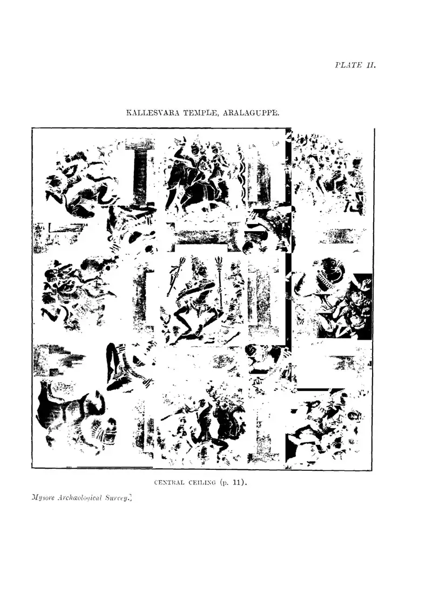
- KALLESVARA TEMPLE, ARALAGUPPE CENTRAL CEILING (p. 11)
Cited in the text: p. 11 ↩
Part II: Study of Ancient Monuments
Araļaguppe
Chennakēšava temple
General Description; History; Platform; Basement
About 3\frac{1}{2} miles directly to the west of Bāṇasandra, close by the M. S. M. Railway line, stands the village of Araļaguppe (Alariguppe
General Description. of the inscriptions) which has several interesting old buildings. The largest of these is a Hoysaļa temple dedicated to Kēšava which stands on a high ground in the centre of the village. It is a single-celled temple with a tower and appears to be a cross between the Kēdārēsvara temple at Haļebiđ and the Lakshmī-Narasimha temple at Hosahoļalu. The outer wall of the garbhagriha and the corresponding portion of the platform are shaped like a star with sixteen points. There is a regular sukhanāsi, in front of which is a navaranga, squarish in shape and having nine aňkaṇas. To the east of the navaranga is its extension with the sides of the entrance aňkaṇa flanked by stone benches. Outside these benches are the pierced windows and railings while the rest of the temple is walled up. The temple has excellent ceilings, pillars and wall decorations. A portion of the latter, however, is concealed from view by the appurtenant Narasimha temple on the south.
The temple has no connected inscriptions except the signatures of sculptors under some of the wall images. From the resemblance of
History. the garbhagriha to that of the Kēdārēsvara temple at Haļebiđ and of the rest of the temple and its sculptures to those of the temples at Nuggihalli and Hosahoļalu, the date of the temple has to be guessed as being somewhere about the first half of the 13th century A.D.
The temple is raised on a platform, about 4' high, whose contour follows that of the temple. Its five cornices have unworked faces. One
Platform. set of steps only leads up to it on the east and is flanked by niched towers. Every alternate point of the star appears originally to have had a sculptured elephant of poor workmanship. One of these is now in position on the north-west and three others are found around the temple.
The basement around the navaranga and garbhagriha resembles those of the Haļebiđ Kēdārēsvara and Nuggihalli Lakshmī-Narasimha
Basement. temples and has six sculptured friezes fully executed. The general impression conveyed by the sculptured wall is one of profuse grandeur.
Friezes
Frieze B. —The second frieze is that of horsemen with swords and lances, cantering forth to battle as in a procession. Some of the animals wear mail armour and the riders wear gaiters and shorts. Here and there camels with drums break the monotony of the horses.
Frieze C. —The third frieze is a long creeper scroll of the usual type in high relief.
Frieze D. —The fourth one is the mythological frieze illustrating the Rāmāyaṇa and the Bhāgavata. The chief scenes can be indentified as follows:—
East wall: commencing from the south of the Navaraiga doorway:
(a) A king seated in state (Daśaratha?) flanked by lady attendant and soldiers.
South of front aṅkaṇa :—
(a) Daśaratha is received in Svarga by Indra and other gods.
(b) The Putrakāmēshṭhi sacrifice.
(c) Daśaratha and his queens receive the sacred porridge.
South-east of Navaraiga :
(a) Rāma and his three brothers are born and are suckling.
(b) Daśaratha celebrates the birth of his children.
South of Navaraiga :—
(a) The babies are named by the king and queen in state.
(b) The cradle ceremony.
(c) The infants crawling on fours.
(d) The boys learn archery.
(e) The depredations of Mārīcha and Subāhu.
(f) Viśvāmitra seeks Rāma and Lakshmaṇa.
(g) Rāma and Lakshmaṇa follow Viśvāmitra.
(h) Rāma and Lakshmaṇa slay Tāṭakā near her hill.
The south outer wall of the sukhanāsi and garbhagrīha is hidden by the Nara-simha shrine.
West of Garbhagrīha :—
(a) Rāma, Lakshmaṇa and Sitā live on the banks of the Gōdāvarī.
(b) They slay demons who attack them in the jungles.
(c) [To be indentified].
(d) They slay Virādha.
(e) They cut off the nose of Śūrpanakhī and destroy the headless Kabandha.
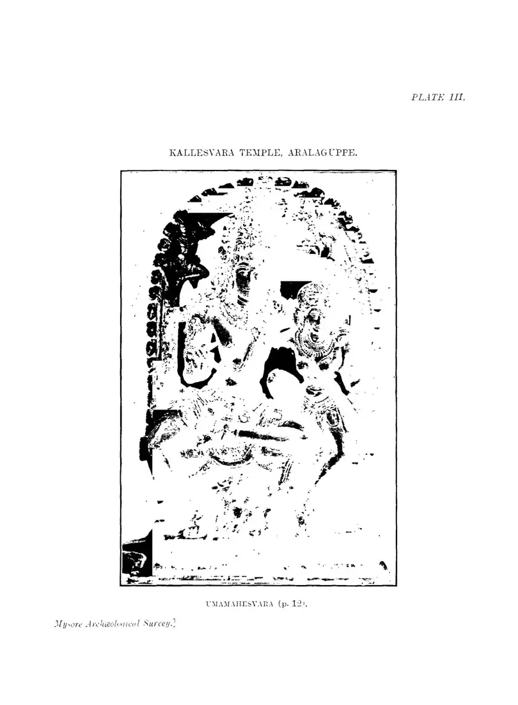
- KALLESVARA TEMPLE, ARALAGUPPE UMAMAHESVARA (p. 12)
Cited in the text: p. 12 ↩
(f) Rāma :pursues the golden deer, while Rāvaṇa carries off Sītā in a vimāna held in his left hand.
(g) Jaṭāyu is slain by Rāvaṇa.
North of Garbhagriha :—
(a) Coronation durbar of Sugrīva.
(b) Rāma sends out Hanumān.
(c) Hanumān brings news to Rāma.
(d) Darbhaśayana.
(e) A multi-headed figure : perhaps, Rāvaṇa.
(f) Rāma, Lakshmaṇa and Sītā standing.
(g) Rāma, Lakshmaṇa, Bharata, Śatrughna and Sītā are taken in procession.
North of Sukhanāsi :—
(a) Coronation procession of Śrī Rāma with musicians and dancers celebrating.
The Rāmāyaṇa ends here. The Bhāgavata begins :
North-west of Navaraiga :—
(a) Lakshmīnārāyaṇa in Vaikuṇṭha.
(b) Lakshmīnārāyaṇa and Durgā in conference.
(c) Vasudēva brings Krishṇa to Yaśōdā in Gōkula.
(d) Kamsa attempts to kill the new born child, and is punished by her in the shape of Durgā.
North of Navaraiga :—
(a) Kamsa in durbar sends Pūtanī.
(b) Krishṇa is brought up in Gōkula.
(c) He is fondled by ladies, rocked in a cradle, crawls on the floor and is brought up with Balarāma.
(d) Krishṇa slays Pūtanī.
West Buttress :—
(a) Cart-loads of butter and milk are taken to Krishṇa.
(b) Krishṇa destroys the twin trees.
East Buttress :—
(a) Krishṇa slays Dhēnukāsura.
South-east of Navaraiga :—
(a) Krishṇa slays an elephant, perhaps Kamsa's elephant.
North of front aṅkaṇa :—
(a) Krishṇa and Balarāma overcome the wrestlers.
(b) Kālingamardana.
(The story is a little confused here.)
East of front anikaṇa:
Groups of Gōpīs admiring Krīshṇa.
The fifth basement frieze around the navaraṅga and garbhagrīha contains a row of makaras with uplifted heads while the sixth is a frieze of hamsas in various artistic attitudes.
Instead of the last two friezes, in front of the temple, however, is a row of Yakshas seated between pilasters bearing turrets with intervening rearing lions. Above the row of turrets is a slanting railing with creeper scroll band below and jewelled band above between which is a row of sculptured panels separated by cylindrical double pilasters. The panels contain images of ladies, dancers, musicians and soldiers and are not of high class workmanship.
Above the railing on the east are a series of pierced windows with un-worked surfaces. One of these slabs on the south-east contains a Kannaṇa inscription of about 1700 A.D.
Wall Decorations
The wall around the rest of the temple is, as usual, divided into the upper and lower halves by a cornice ornamented with beaded pendants and floral dentils. Below it are the large wall images having mostly scroll work and lion faces on the pedestals and creeper tōranas like those at Nuggihalli and Sōmanāthapur. The images also are of the same quality as at Hosahoļalu being profusely ornamented and quite good, though shortish and thick limbed. They are, in order, from the south-east of the navaraṅga and running clockwise:—
1. 2. Lakshmī and Amaranārāyaṇa. The latter is seated on the coils of Ādiśesha.
South of Navaraṅga:—
3. Dancing Gaṇēśa.
4. Mōhinī with attendant removing thorn from foot.
5. 6. Six-handed Sarasvatī dancing, playing on vīnā, with lady attendant on left.
7. 8. 9. Harihara (?) standing with a consort on each side. His four hands hold rosary, chakra, šankha, broken (bowl? supported by rod). Sculptor's name in Kannaṇa: Honoja.
10. Six-handed goddess (Hariharēsvari?) with musala, padma, chakra, šankha, pāša and kapāla or bowl in her hands. The sculptor's initial appears on a number of these sculptures.
11. Vishṇu standing as Kēšava (?) (padma, šankha, chakra, left hand free and loose).
12. Vēṇugōpāla.
13. Vishṇu standing as Śrī Krīshṇa.
14. Lakshmīnarasimha.
15. Vishṇu as Śrī Rāma: six-handed (arrow, chakra, padma, šankha, musala and bow).
16. Vishṇu standing six-handed (abhaya, arrow, śanka, padma, bow, varada).
17. Six-handed Lakshmī standing (padma, goad, chakra, śankha, pāśa, phala).
18. Yōganārāyaṇa (four-handed). The sculptor Honnōja is mentioned as having built the temple.
19. Lady (Lakshmī) offering flowers.
20. Six-handed Vishṇu standing (chakra, two hands covered by later wall, pāśa, shield, and śankha)—Gōvinda (?)
A number of images including Ugranarasimha are concealed in the Narasimha temple.
West of Garbhagriha :—
21. Varadarāja—only two hands visible (abhaya and śankha)
22. Śarasvatī dancing, eight hands (broken, broken ankuśa, rosary, book, pāśa, tāla (?) vīnā); a drummer on each side.
23. 24. Goddesses with padma and phala.
25. Vishṇu standing as Kalki (?) (sword, chakra, śankha, abhaya).
26. Varadarāja (dāna, chakra, śankha, abhaya.)
27. (a) and (b) Lakshmī.
28. Vishṇu standing, four hands [arrow, chakra, plantain or sugarcane plant (?), bow]. A peculiar form, to be identified.
29. Trimūrti (?) with eight hands (sword, broken, trident, chakra śankha, pāśa, padma, oblong shield).
30. Goddess standing.
31. 32. Vishṇu standing as Janārdana (padma, chakra, śankha, pāśa, 2 other hands broken, one on either side). Lakshmī to left.
33. God standing (Harihara ?); four hands holding sword, chakra, śankha and trident.
34. Mōhinī dancing with uplifted cobra.
35. 36. Vishṇu standing (chakra, musala, musala, śankha); Lakshmī on left.
North of Garbhagriha :—
37. 38. Vishṇu as Balarāma (?). standing (abhaya, musala, chakra, śaṅkha); Lakshmī on right.
39. 39 (a) Vishṇu as Paraśurāma [padma, paraśu, chakra, musala (?)]; Lakshmī on left.
40. Vishṇu as Halāyudha (chakra, plough, musala, dāna.)
41. Lakshmī.
42. Lakshmī.
43. Vishṇu as Halāyudha (padma, plough, chakra, musala.)
44. 45. Vishṇu standing (abhaya, chakra, śankha, musala); Lakshmī on right.
46. 47. Eight-handed Harihara (?) standing (rosary, chakra, cobra, padma, śankha, plough, musala, abhaya). Lakshmī on left.
48. 48 (a). Vishnu standing with the two front hands joined in yōgamudrā and the two back hands holding chakra and šankha. Lakshmī on right.
49. 50. 51. Vishnu standing [padma (?), musala, chakra, šankha] with a consort on each side.
52. 53. 54. Kālīngamardana flanked by consorts.
55. Lady with padma and phala.
56. Garuđa.
57. 58. 59. Vishnu standing (musala, padma, gadā, chakra) flanked by consorts.
60. 61. Vishnu standing (phala, chakra, pāša, musala). Lakshmī on right.
62. Mōhinī molested by a monkey.
63. Vishnu standing as Mādhava (?).
64. 65. Vishnu as Varadarāja with Lakshmī on right.
66. Vishnu standing eight-handed (musala, arrow, padma, chakra, bow, šankha, goad, pustaka). (Pl. IV, 2). To be identified.
67. Goddess.
68. 69. God standing (rosary, vajra, gourd, bowl, broken) with consort on right.
70. Vishnu as Venkatēša (?) (abhaya, šankha, chakra, kaṭihasta).
71. Harihara (trident, concealed in buttress wall, šankha, rosary).
72. Vishnu standing [musala (?), chakra, šankha, dāna].
73. Lakshmīnārāyaṇa.
74. Vishnu standing, with four hands—(tree branch, chakra, šankha, padma).
75. Vishnu standing, front hands joined in añjali and back hands holding chakra and šankha.
76. Vishnu as Śrī Rāma (arrow, šankha, chakra, bow).
77. Eight-handed Harihara (musala, trident, gadā, chakra, šankha, goad, paraśu, musala.)
78. 79. Vishnu standing (šankha, chakra, šankha, padma). Lakshmī on left.
80. 81. Concealed by east buttress wall.
82. Lakshmī.
83. 84. Vishnu dancing; eight hands [rosary, mudrā with the thumb and the anāmikā (ring finger) joined together (?), chakra, broken, šankha, samamudrā, lambahasta, kalaša]. (Pl. IV, 1). Lakshmī on left.
85. 86. Harihara (padma, chakra, šankha, trišūla) with consort on right.
Above the dividing cornice is the usual row of turrets borne on single or double pilasters with a number of images of goddesses holding phala and padma standing on the north and south of the navaraṅga wall.
The eaves are of the usual type with beaded pendants and floriate dentil projections. The parapet is composed of four cornices, the lowest bearing flowers, the second makara mouths, the third being unworked, and the fourth supporting the row
Eaves and Parapet
Tower; Navaranga; Navaranga Pillars; Ceilings; Sukhanāsi; Garbhagrīha; Conservation
The parapet is composed of four cornices, the lowest bearing flowers, the second makara mouths, the third being unworked, and the fourth supporting the row
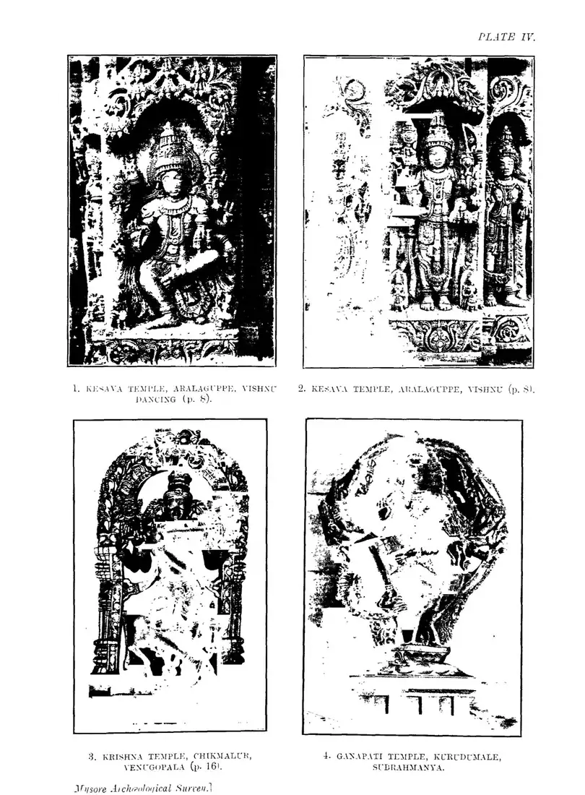
- KESAVA TEMPLE, ARALAGUPPE, VISHNU DANCING (p. 8)
- KESAVA TEMPLE, ARALAGUPPE, VISHNU (p. 8)
- KRISHNA TEMPLE, CHIKMALUR VENUGOPALA (p. 16)
- GANAPATI TEMPLE, KURUDUMALE SUBRAHMANYA
of šikharas which have, interspersed among the kīrtimukhas and Yakshas, the following: on the east, six-handed Lakshmī dancing; on the south, six-handed Vishṇu along with his consorts; and on the north, Lakshmī in the yōga posture with an attendant Lakshmī on each side.
The star-shaped tower, which is formed of four tiers of comparatively plain turrets with kalašaless šikhara above, has a fine outline effect. Its eastern projection has lost the Saļa group.
A plain unworked doorway leads into the navaraṅga which has the usual nine aṅkaṇas with an additional eastern aṅkaṇa and the stone benches on the east side. It has no side niches, but has two niches against the western wall containing Gaṇeśa (south) and Mahishāsuramardinī, a good group (north). The other images kept in the navaraṅga are a fine well sculptured image of Kēśava, six feet high with the two front hands and nose broken,—perhaps the original image of the temple,—and a small recent image of Rāmānujāchārya which is now worshipped as Guṇdappa.
The navaraṅga pillars are of two main varieties. The four central pillars and the easternmost two are of the lathe-turned bell-shaped type, rather stout and fat, but finely ornamented with beaded work round the bell, and scroll work on the pot and abacus. The capitals have beaded work and lions in the corners. The other two pillars are of the bell-shaped sixteen-fluted kind and have bracket figures of musicians connecting the abacus with the wheel-moulding.
Most of the ceilings of the temple are deep and dome-shaped. They are, commencing from the east doorway and running clockwise:—
1. The Dikpālakas on the octagon with a row of Yakshas above and circular indented gallery with three concentric circles and a pendant bud in the dome.
2. A twelve-pointed star-shaped gallery with concentric circles above.
3. Six-pointed star-shaped gallery with concentric circles.
4. Octagonal gallery with concentric circles above.
5. Śrīchakra-shaped gallery with concentric circles above.
6. Flat ceilings with padma medallions.
7. Squares with interlaced serpentine band.
8. Eight-pointed, star-shaped gallery with concentric circles above.
9. Circular gallery with concentric circles above.
10. Indented circular gallery with concentric circles above.
The sukhanāsi doorway is of the usual Hoysaļa type with dvārapālas and simple perforated screens on the jambs and Amaranārāyaṇa on the lintel with five turrets and intervening lions on the cornice.
Sukhanasi.
2
The sukhanāsi ceiling has a shallow padma dome.
The garbhagriha doorway is flanked by dvārapālas and has Lakshmī-nārāyaṇa on the ceiling. The garbhagriha ceiling is almost flat with padma medallions. In the cell on a large Garuđa pedestal stands a smallish image of Kēšava which is of definitely Hoysaļa workmanship with profuse ornamentation, a consort on each side and a serpentine tōraṇa with the ten avatāras around its edge. But it is doubtful if this was the original image, since an outline marked on the upper surface of the pedestal suggests a much larger image. Possibly the broken one kept in the navaranga was originally in this cell.
The temple which is a typical structure of the common class of ornate Hoysaļa temples is rapidly going to ruin. It deserves to be better cared for and looked after.
1. The foundation of the temple on the north has sunk by nearly half a foot and the building with its tower has a slight leaning on this side.
Conservation.
2. To prevent the navaranga walls from falling outward two buttress walls of size stones and a stone beam buttress have been given on the north side. They are ugly and cannot be done away with unless the walls are rebuilt.
4. On the north-east and elsewhere, owing to the action of rain water a portion of the foundation is laid bare. This should be covered up very early with a stone revetment.
5. Proper arrangements may be made for the regular worship of the gods in the village by employing for Kēšava and Narasimha a regular Vaikhānasa priest. That would make the temple more popular and ensure public attention to it.
6. Since the railway line is about a hundred yards to the south of the village a flag station may be erected here at which local trains at least would stop.
7. The roof has cracked and is leaking in many places. It has to be repaired and the stones of the platform to be reset and cement-pointed.
Part II: Study of Ancient Monuments › AraļaguppeKallēšvara temple
About 200 yards to east north east of the Kēšava temple and close to the tank is a group of old temples known as the Pañchalingas. Of these the temple of Kallēšvara is the largest. It is shaped roughly like a latin cross with its top to the east. The main shrine of Kallēšvara is on the west and consists of a small garbhagriha, an open sukhanāsi, and a navaranga. Evidently it is a building very much older than the Hoysaļa period. In all probability it hails from the Pallava period, i.e. , about the 9th century A.D.
Its walls are practically straight and without ornamentation except for low, flat and plain pilasters and the two pierced stone windows of the navaranga which have fine designs. On the south one is a creeper scroll with two men riding lions in the convolutions, while the north one, which perhaps bore dancing figures, is broken. A modern porch leads to the navaranga doorway which is of fine workmanship. Its jambs have seated Yakshas and Šaiva dvārapālas, vertical bands of creeper scroll and rope ornamentation. Above the Gajalakshunī lintel are Yakshas with dwarfish bodies, while on the canopy above them are the characteristic horseshoe kīrtinukhas.
The navaranga which is about 16' × 16' has three kinds of pillars. The central ones are of the slim bell-shaped Chālukyan type; those of the sukhanāsi are similar with sixteen fluted lower shafts rising on octagons, while the wall pilasters are squarish with the same bell shape.
The ceilings are all flat and plain except the central one which is of marvellous workmanship and of great sculptural importance. It is a flat ceiling with nine panels, from the four central revetments of which are suspended four flying Gandharvas with garlands in their hands. In the outer panels are the eight Dikpālakas with consorts and attendants on their vāhanas. Each one of these figures is beautifully conceived and executed. In the central panel is Tānđavēšvara in a vigorous pose beautifully executed. The ornate kīrītas, the broad chest, slim waist, tapering arms, fish-like thighs, moderate ornamentation and life-like representation place the figures of this ceiling among the finest sculptures in the Mysore State. (Pl. II). Among the points of interest may be noticed:—
(1) The peculiar pose of Šiva's limbs.
(2) The musicians accompanying Šiva, especially the drummer with three tabala -like drums made by stretching leather over the mouths of three pots, and the flutist who rides on a cobra;
(3) The clouds through which Indra's four-tusked elephant is moving in the heavens;
(4) Varuņa's makara which has only two front legs, its back being scaly and its sides floral; (5) Vāyu's finely horned antelope flying through the air ;
(6) The musical attendants and garlanding Gandharvas of Īsāna, which are sculptured almost completely in the round.
Each one of the panels deserves to be separately photographed, especially Tāṇḍavēsvara, Īsāna and Varuṇa.
The garbhagriha doorway is also old though of plainish workmanship ; and the flat-headed large linga is placed on a fine broad yōnī .
The Nañdi in the outer navaraṅga which faces Kallēsvara is not very beautiful. The north shrine is now almost completely ruined and the granite pillars that stand there are of modern workmanship. A broken image of Kēšava of Hoysaļa workmanship stands in it facing south with a flat slab of the ceiling falling on its head.
The east shrine which is also modern contains an image of Sūrya, also of Hoysaļa workmanship, placed on a pedestal with seven horses.
The south shrine which is also modern contains a beautiful old image of Umāmahēsvara. (Pl. III). The god is two-handed and sits in sukhāsana with marvellous ease and grace. By his side sits his consort, while above him are two flying Gandharvas and below is a recumbant Nandi. The graceful contour of the bodies and the ease of their poise and the beauty of their proportions are wonderful. The tōraṇa is thin and unimportant. This image, very probably, belongs to the same period as the Kallēsvara temple, i.e. , about 900 A.D. The ceiling in the Kallēsvara shrine and the Umāmahēsvara image remind us strongly of Ajanta art.
The other linga temples nearby are two to the right and two to the left.
Other temples
(1) Round bell-shaped.
(2) Square bell-shaped, with sixteen-pointed fluted shafts.
(3) Indented square pattern.
They remind us strongly of the Maraļēsvara and Pātāļēsvara temples at Talkād. The whole series is built on a large platform about 100 yards north to south and 50 yards east to west, which is faced all round with dressed granite slabs. This island was probably surrounded by the old tank which is now silted up on the west. This set of temples appears to belong to the Gaṅga times.
The earth around these temples had better be excavated to the depth of about 4 feet when the temples would be easier to enter. The Kallēsvara temple was repaired about five years ago by one Bhadramma. Its stone stepped-pyramid tower and indented square-bottomed śikhara are now plastered over and surmounted by a metal kalaśa. It is a very old temple which deserves to be protected and placed under Class I for conservation.
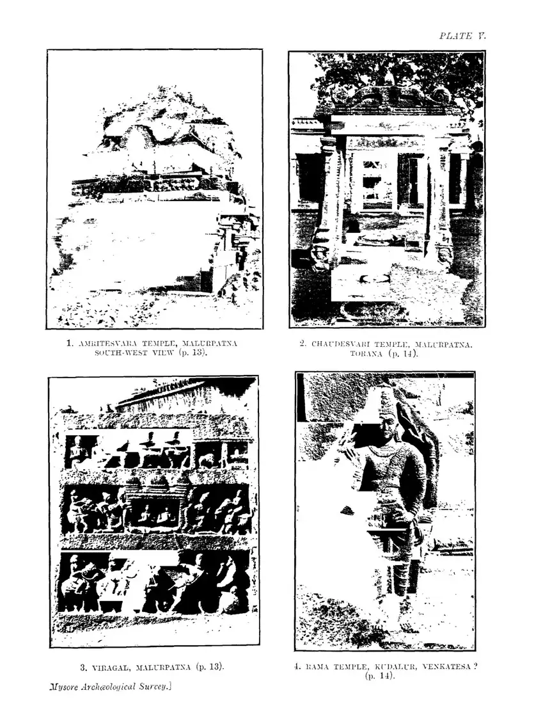
- AMRITESVARA TEMPLE, MALURPATNA SOUTH-WEST VIEW (p. 13)
- CHAUDESVARI TEMPLE, MALURPATNA TORANA (p. 14)
- VIRAGAL, MALURPATNA (p. 13)
- RAMA TEMPLE, KUDALUR, VENKATESA ? (p. 14)
Maļūrpatna
Amrītēšvara temple; Conservation; Nārāyaṇasvāmi temple; Conservation
Maļūrpaṭṇa, in the Chennapaṭṇa Taluk, is about five miles from Maļūr and is situated on the right bank of the Kaṇvā river. It appears to have been an important agrahāra during the Gaṅga, Chōla and Hoysala days. It contains several vīragals one of which is figured on Pl. V, 3, about half a dozen old granite temples and a large number of Grantha, Tamil and Old Kannada inscriptions.
AMRĪTĒŠVARA TEMPLE.
The Amṛitēśvara (Arkēśvara) temple stands to the south-west of the village and is in a condition of advanced ruin. It has a garbhagrīha and a sukhanāsi with four pillars built evidently in the Chōla days as seen from the inscriptions. The sukhanāsi pillars are round and ornamented and resemble those of the Maraļēśvara and Pātāļēśvara temples at Talkāđ. The outer walls are ornamented with pilasters and niches in low relief. The front navaraṅga is a Hoysala addition of the days of Narasimha I with at least four of its pillars finely fluted and bearing elephants, flowers, etc., carved in low relief. The temple has a stone tower. (Pl. V, 1).
The temple is so ruined that it is difficult to restore it to its original form. It has some lands, and worship is being offered to its black linga by a peasant. A pillar of the sukhanāsi which has fallen down and two of its beams could be restored to their position with the help of the labour which the villagers promise. A battened wooden door may be provided.
NĀRĀYAṇĀSĖAMI TEMPLE.
About a hundred yards to the north-west of the Amṛitēśvara temple is another temple in which there are two images of Vishṇu as Janārdana; one is an early Vijayanagar figure in the round and the other a granite relievo which has an older look. The hands are thus disposed: abhaya with padma in the palm, chakra, śaikha, gadā with fingers pointing to the feet. There is some evidence that the temple had formerly a navaraṅga. What now remains is the Chōla structure consisting of the garbhagrīha and the pillared sukhanāsi and a small rude porch of recent times.
What the temple needs is only the clearing of the neighbourhood. A half-built compound wall of recent times surrounds the temple.
Conservation. There does not appear to be any need to complete it since the building has a door which can be locked.
Varadarāja temple
The Varadaraja temple is a small structure which is now being used as a private dwelling of the priest. He may be removed to some other house and the neighbourhood cleaned.
Chaulēšvari temple
The temple of Chaudēšvari near the tank has a large late Vijayanagar prākāra and a mukhamaṇtapa with a few rounded pillars which appear to date from the Hoysala period. The rest of the temple which is possibly of the Gaṅga or Chōla period consists of a garbhagrīha with two octagonal simple pillars. In the navaraṅga are a number of unimportant relievo sculptures as in the Pātāļēsvara temple at Talkād. The navaraṅga doorway is guarded by two Yaksha dvārapālas. The main image is a meso-relievo showing a beautiful image of Chāmuṇdā seated in sukhāsana and spearing the fallen rākshasa. The pose is unusual, dignified and interesting.
In the place of the Nandi manṭapa there is a stone tōraṇa or gate-way adorned with pilasters borne on dwarfs or Yakshas. It has an interesting top representing the section of a dome. (Pl. V, 2).
Īšvara temple
The Ísvara temple near the tank is a modern structure of little importance containing an old linga set up on a modern pītha. The walls are badly cracked.
Since there are so many temples in such a small place it would be better if renovation efforts are concentrated on a few only, preferably Chaudēšvarī, Nārāyāṇasvāmi and Arkēšvarasvāmi temples.
Part II: Study of Ancient Monuments › AraļaguppeKāđalur
Situation; Šrī Rāma temple
Kūđalūr is a village about four miles on the way from Maļūr to Maļūrpaṭna.
Situation. It also appears to have been a prosperous agrahāra in the Chōla days dating from which are two temples known as Śrī Rāma temple and Maṅgaļēsvara temple.
The Śrī Rāma temple has a neglected appearance with cracked walls. Against one of its outer walls is found a relievo image of Venkaṭeśa (?)
Sri Rama Temple. with abhaya, prayōga-chakra, šankha and kaṭihasta (Pl. V, 4).
The navaraṅga walls bear the masons' marks in Kannađa characters. Were they rebuilt in Vijayanagar times? To the north of the temple the cart-track passes through a deep cutting which reveals many layers of glazed redware potsherds, sometimes with incised ornamentation.
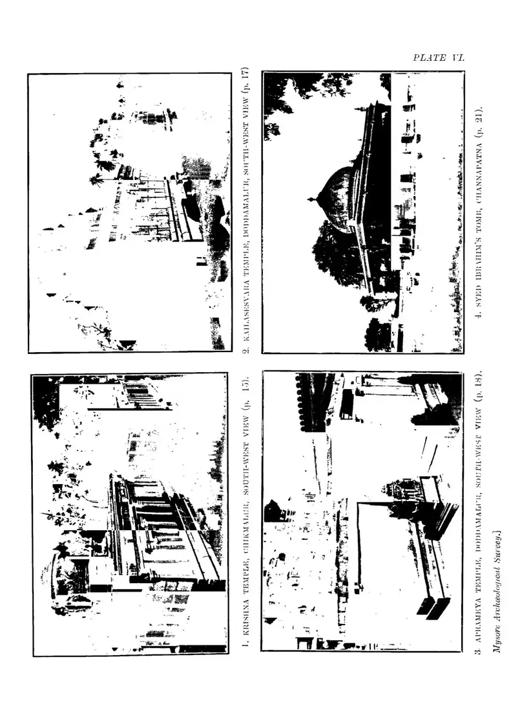
- KRISHNA TEMPLE, CHIKMALIFIR, SOUTH-WEST VIEW (p. 15)
- KAILASESYARA TEMPLE, DODDAMALFIR, SOUTH-WEST VIEW (p. 17)
- APRAMEYA TEMPLE, DODDAMALFIR, SOUTH-WEST VIEW (p. 18)
- SYEID IBRAHIM'S TOMB, CHANNAPATNA (p. 21)
About a hundred yards to the north-east of the Rāma temple are the ruins of the temple of Mangalēśvara which appears to have faced westwards, having a garbhagrīha, a sukhanāsi and a navaranga with roughly worked pillars. The numerous inscriptions of the temple show that it was built in the Chōla or Hoysala period. It is impossible to do anything to save this temple. It would be better if the inscription stones and the three large lingas are rescued from destruction and stored in a safe place. To the north of this temple is a stone-built tank, about 60 feet square, near which are a number of male and female relievos.
CHICKMALUR.
ŠRĀ ARKĒŠVARASVĀMI TEMPLE.
Chickmaļūr is an old agrahāra town with the temples of Gōpālakrīshṇa and Arkēśvara.
The Arkēśvara temple is a plainish structure with a small garbhagrīha, a sukhanāsi, and a navaranga with four very plain octagonal pillars and a large porch of four pillars to the east and a smaller one of two to the south. It has a close resemblance in outline to the Vaidyēśvara temple at Talkād, though it has almost no ornamentation. On the outer walls of the garbhagrīha appear typical pilasters and niches which are imitations (?) of the Chōla period. No Yakshas or other figures below or on the eaves are found in the temple.
To the north of the navaranga a door admits us into a small chamber with a brick niche in which perhaps was formerly housed the Dēvī image. In the navaranga are now found the following rude sculptures. Saptamātrikas, Vīrabhadra with vīṇā, Shaṇmukha, Varadarāja and Sūrya.
The sukhanāsi has three aṅkaṇas extending from north to south and then a smaller sukhanāsi leading to the centre. The linga appears to be a natural stone.
The temple appears to be in a comparatively strong condition and is a muzrai institution. A compound wall was built around it but it is now embedded in the earth. This outer yard should be excavated and the compound wall rebuilt. Electric light may be installed, if it is not very expensive.
GOPĀLASVĀMI TEMPLE.
The Gōpālasvāmi temple appears to be part of the Chickmaļūr agrahāra, since the Arkēśvara temple is exactly to its north-east. It has a small garbhagrīha, a double sukhanāsi, a navaranga and a porch of peculiar form. The latter is really a porch of three aṅkaṇas with another of a single aṅkaṇa projecting from the centre. (Pl. VI, 1).
The pillars of this porch and doors of the navaraṅga appear to belong to the 14th century and bear numerous Tamil and Grantha inscriptions. The pillars, again, have sixteen-sided imitation flutings like those in the Hiđimbēšvara temple at Chitaldrug and on the cubical mouldings appear various bas-relief figures including Narasimha, Janārdana, circling acrobats, Vēnugōpāla, a lady feeding deer, etc. The pillars are elegant and are crowned with capitals having pendent drop-brackets. The dvārapālas are rude sculptures in granite. The only thing of any sculptural value in the temple is the main image of Vēnugōpāla, about 4' high, which appears to be carved in pot-stone in imitation of Hoysaļa work. The image and its tōraṇa are of one piece and the latter is well-designed, though the ten avatāras are absent. The figure is fine and is reclining upon a cow which is feeding its calf. (Pl. IV, 3). A flute is held in the god's hands and the lips are shaped to show the act of blowing into the flute. The archaic smile noticed in the images of the Vaidyēšvara temple at Talkāđ is found on this god's face.
The garbhagrīha has on its outside plasters and niches resembling Chōļa work. The towers of most of these temples appear to have been rebuilt in the late Vijayanagar period with flattish bricks typical of the Pāllegār times.
The mahādvāra which is without a tower is also a Vijayanagar structure. The large stone inscription to its south-east is buried in the ground and should be dug up and set up in the same place.
The temple is in a fair state of preservation, being provided with four ugly but serviceable modern windows. In the south-west corner a Conservation. stone block is out of position and could be easily restored. The whitewash on the inscriptions must be removed. The north wall is bulging out in a few places. It must be repaired. The institution is a muzrai one and not a protected monument.
Maņgaļēšvara temple
To the north-west of the Gōpālasvāmi temple on the right bank of the river stands a small temple of Kallēšvara with a large kalyāni to its north (C. 120' × 120'). The building, though small and modest, appears to be a Chōļa construction and bears numerous Tamil inscriptions on its pillars and walls. It appears to have undergone a reconstruction sometimes with brick walls in the late Vijayanagar period as seen from the flat bricks used. But wherever the older work exists, as on the wall plasters and niches and the pillars of the navaraṅga, the workmanship is correct and tasteful. The pillars are of the sixteen-sided fluted type, with sculptured cubical mouldings. The navaraṅga and sukhanāsi doorways have both the rudrāksha beads. The linga is a small one on a square pedestal and appears to have been disturbed from its original position. The garbhagrīha is very dirty and full of debris. Worship could be revived in this temple by the Muzrai Department at a small cost. The western wall of the navaraṅga is out of plumb. There is no porch in front of the navaraṅga.
DODDA-MALUR.
Part II: Study of Ancient Monuments › AraļaguppeChickmaļūr
Šrī Arkēšvarasvāmi temple; Conservation
Gōpālasvāmi temple
Conservation
Kallēšvara temple
(Pl. VI, 2.)
Part II: Study of Ancient MonumentsDođđamaļūr
Kailāsēšvara temple
History; Description; Conservation
No heading in the body: this section starts at its printed page (17-18).
The Kailāsēšvara temple appears to have been constructed as a part of the Periya Maļūr Agrahāra by a Chōła officer about 1000 A.D.
History.
It is seen from the Tamil inscriptions in which the temple abounds, that grants and improvements were made to it in the late Chōła period, i.e. , about 1100 A.D., in the early Hoysała period (about 1140 A.D.) and the late Hoysała period (1320 A.D.); and from the brick work. etc., we gather that further renovations were made in the 17th century. From an inscription by the side of the mahādvāra it is gathered that Vira Ballāla III made some grants to the temple; and to his time we may have to assign the mahādvāra and the porch and possibly also the navaraṅga pillars.
The temple has a two-pillared garbhagriha and a sukhanāsi, both of which bear distinct traces of Chōła work with their pilasters
Description.
and niches, the rows of kubjas and hamsas below the eaves, and kīrtimukhas on the sharply curved eaves. The towers above are no doubt of the 17th century and are in a ruined condition. The navaraṅga whose basement cornice also bears numerous Tamil inscriptions, is less artistic. It is supported by four pillars with fluted shafts and cubical mouldings which would probably date from the Chōła period. The mukhamanṭapa of six aṅkaṇas is also probably of the 14th century, some of its pillars having octagonal bell mouldings and two others being cylindrical. In the navaraṅga are kept the images of the Saptamātrikas, of Sūrya, Bhairava and Nandi.
In the north wall of the navaraṅga a doorway leads us to the Pārvatī shrine which has also a navaranga and a sanctum. The workmanship here appears to be of a later date, though for the basement cornice numerous stones with Tamil inscriptions have been used. The Kailāsēšvara lingua is of dark grey stone and is about 3\frac{1}{2} ' high with its square pedestal. The brick towers of both the shrines are of about the 17th century.
The navaraṅga doorway has the rudrāksha beading as in the Vaidyēšvara temple and there are some pillar brackets lying about which contain the typical Chōła wave design.
3
This temple of Šiva which is one of the oldest in the neighbourhood is in a dilapidated and neglected condition. This is perhaps due to the fact that the cultured inhabitants of the place are, without exception, Šrivaishṇavas. Though the building is not of high architectural merit, as a piece of Chōla work standing for 900 years, it deserves some attention. The tower of the Pārvatī temple is in an advanced state of ruin and may be removed. The Pārvatī image of early Vijayanagar times (14th century) is now kept in the sukhanāsi and may be reinstalled. The walls of the main temple and its pillars are in many places out of plumb and could be set right with only the expenses for labour. It is necessary for the Executive Engineer to visit the place and send up an estimate for its repairs. On receipt of his report the question of renovating the temple may be considered.
Apramēya temple
General Description; The Main temple; Conservation
(Pl. VI, 3.)
The Apramēya temple is the largest in the neighbourhood and perhaps the most important from the point of view of worship. It is in the centre of a Brahman agrahāra with the Kailāsēśvara temple in the north-east. It has a high prākāra wall and a large mahādvāra surmounted by a high brick tower typical of the late Vijayanagar days.
On the inside of the prākāra wall all around runs a fine verandah or 'Kaisāle', three aṅkaṇas broad, at the back of which, in many places, are shrines housing the Jīyar, Nammāļvār, Mađapaļlināchchār, Tirumangai Āļvār, Dēšika, Kūrattāļvār, Pilļailōkāchārya, Bhāshyakār and Bālakrīshṇa. The last shows the child Krīshṇa in the interesting pose of moving on all fours with a lump of butter in the right hand. The image is disproportionate and is said to be the original of which a similar figure in the Mysore Krīshṇa temple is a copy. The pātālāṅkaṇa is borne on high octagonal pillars and appears to be of the Pāllegār times. The votive images of Rāmadāsa and his consort, Manchi-Lakshmī, stand in this pavilion. It is possible that these people got it constructed in the days of Jagadēvarāya. The Lakshmī shrine is found in the south-west corner of the prākāra and contains an image of the same period.
The main temple appears to be an old Chōla structure considerably altered, repaired and improved in the Vijayanagar period. Its octagonal basement cornices and outer walls have a large number of Tamil inscriptions some of which go back to the Chōla times. The earliest references to the god Apramēya appear to date even from the time of Rājēndra Chōla (?), i.e. , before the days of Rāmānujāchārya.
The main temple.
The garbhagriha and many of the stones used for the rest of the structure appear to belong to the Chōła times ; but the sukhanāsi which is large and borne on two heavy Vijayanagar type pillars with drop pendants, octagonal shafts and cubical mouldings and the navaraṭga of four similar, but taller, pillars are all structures definitely of the Vijayanagar period. There can be no doubt that these portions were largely rebuilt during the days of Achyutarāya or even later as seen from the mason's marks in modern Kannađa. A further indication is given by a row of fine relievo sculptures found on the architrave in front of the navaraṅga. Here Rāma and Sītā are seated in state with all the court in attendance. These images remind us of similar things on the architrave at Kałale and elsewhere and belong definitely to the 16th century. In the navaraṅga are two dvārapālas and a Vishvaksēna. The main image of Apramēya, about 4\frac{1}{2} ' high, is really Janārdana with abhaya and padma combined. The figure and its tōraṇa are all of one piece. It is a beautiful image, finely ornamented. The chakra and śankha are held between the finger tips, the former being of a peculiar shape with a large hub. The kirīṭa also is ornamented with vertical bands. Even the finger nails of the image are well worked reminding us of Hoysała workmanship. But the absence of the ten avatāras from the tōraṇa and other features suggest that it is either an eleventh century sculpture or one belonging to the 14th century. The archaic smile is not pronounced. In all probability it is the original Chōła piece.
The temple is a prosperous muzrai institution and an ancient monument of class II. Its inscriptions have been covered over with white-wash which should be removed. Several parts of the surrounding verandah and mahādvāra are said to be leaky. They may be repaired. It may be suggested that the bhakta-vigraha of the Mahārāja may be kept in a chamber at the back of the mahādvāra facing north. The ground around the temple may be levelled and kept clean, no cattle being housed in that locality. A park to the east near the river would add to the attraction of the place. In the north-west corner of the sukhanāsi is a cellar for depositing safely images, etc. A similar one appears tc exist in the north-east corner of the navaraṅga.
Channapaṭṇa— PAGE
Thimmappa Rāj Urs Mansion
Conservation
No heading in the body: this section starts at its printed page (19-20).
The Timmappa Rāj Urs Mansion is a large three-storeyed building situated near the railway line on the north side of the middle of Thimmappa Raj Urs Mansion. Channapaṭna town. It appears to have been constructed by Thimmappa Rāj Urs, a brother-in-law of Kṛishnarāja Vođeyar III, and the foujdar in command of Channapaṭna. The building is a typical Hindu mansion of the early 19th century with a verandah or jagali in front, large halls and rooms in the front block and a fine large open quadrangle behind. Here existed in former times three rows of rooms on the east, north and west with a gateway at the back. The kitchen, the store-rooms and the domestic and women's apartments were formerly here. In the middle of the courtyard, at its back, is a small pond or 'koļa' which gets its water-supply through a 'kārāñji' from a tank called Kunnīrkaṭte in the Bangalore Road. The whole town has its kārāñji system as this building has.
Lakshminārāyaṇa and Nilakanṭhēśvara temples
No heading in the body: this section starts at its printed page (20-21).
The first floor of the front building has a large Darbar hall supported by a row of six wooden pillars of the ornate 19th century type. These have fine Turuvekere black stone pedestals, ornate bottoms, fluted shafts converging towards the top brackets finely painted and gilded. The beams and ceilings which are all of wood are beautifully painted with elegant designs formed of floral figures with infillings of flowering creepers and plants. The character of the painting appears to be mixed, Indo-Moslem designs being particularly prominent. These designs should be compared with those in the Darya Daulat and the Jaganmohan Palace and the Amba Vilās.
Electric wiring appears to have been put in about six months ago and in many places it has damaged and covered the painting designs.
Conservation. This should not have been done without the approval of the Archæological Department. The plaster of the inner walls of the room to the north-west of the Darbar Hall has separated from the tađike wall and is in danger of coming down and even causing accidents. It should be attended to immediately. The heavy almirahs of the Sub-Registrar's Office in the 2nd floor may be removed, the office itself being removed to some other rooms down-stairs. The quadrangle may be converted into a well laid out flower garden, since it has two small kārāñji tanks. It is possible to convert these latter into fountains, if the pressure of water is sufficient. The question of transferring the Taluk Office to a more suitable modern building may be seriously considered. In that case the mansion may be used as a local Art Museum and a rest house for respectable guests. The woodwork and paintings of this building are worthy of preservation and of being copied.
The building has a fine large staircase in the north-east room resembling that in the Jaganmohan Palace. Several of the doorways are finely designed and painted, the Gaṇđabhēruṇđa appearing on the lintel.
The lintel of the front doorway has a fine little pavilion underneath which stands Vēnugōpāla reclining on a cow.
Inside the town of Channapaṭṇa there are the temples of Lakshmīnārāyaṇa and Nilakanṭhēśvara. The latter is a large structure in which the pātālānkaṇa and mukhamaṇṭapa appear to be of the early 18th century by their tall tapering fluted pillars. The rest of the temple with its garbhagriha,
Lakshminarayana and Nilakanthesvara Temples. sukhanāsi and largish navaraṅga with its northern cell for the utsavamūrti are of the middle Vijayanagar period. The images of Lakshmīnārāyaṇa and Pārvatī are good pieces of modern workmanship, the former having a hooded cobra behind. The Nīlakaṇṭha linga is large and round-headed and has an ancient appearance. A marble image of Ādiśankara is found in one of the cells. The temple deserves better attention by the Muzrai Department. Its present keeper Vasudeva Sarma is keeping it neat and clean. He deserves encouragement.
Akkalshah Khadri Darga Makan
The institution has a muzrai grant of Rs. 1,400 and is situated in a very prominent place. The neighbourhood may be kept cleaner and the approach planned out with a walk of flower trees, etc. Perhaps it would be better to give the darga an approach pathway. An estimate for its further repairs has been sanctioned.
Syed Ibrahim's tomb is close to the Bangalore Road, facing east. (Pl. VI, 4).
Syed Ibrahim's Tomb
Near the dargas is the tomb of Ummarkhan close by the roadside. It is said that it has a large underground chamber in which hangs a cradle supporting the coffin of Ummarkhan.
Only a small part of the western extremity of the old Channapaṭna fort now remains. Part of this is visible from the railway train.
Fort Door
for two walls of earth and rubble standing on either side with the stone facing peeled off and utilised for building purposes. One of the holes through which passed the beam formerly used as a bar for the doors is still to be seen. The Hanumān temple just inside the gateway has been rebuilt in a modern form. It contains a base-relief of Hanumān of the usual Vijayanagar times and shows that the old Fort wall was a Hindu structure of the 16th century, perhaps built by Jagadēvarāya. Close-by on the north there is a stone manṭapa which might after all have been a gateway. It is doubtful if there is any use in continuing it as a protected monument.
Part II: Study of Ancient Monuments › Dođđamaļūr › Channapaṭṇa— PAGEVaradarāja temple
No heading in the body: this section starts at its printed page (22).
The Varadarāja temple at Channapaṭṇa is the main temple of the old town and a large structure resembling the Apramēya temple at Varadaraja Temple. Maļūr in most respects, except that it is even less ornamental and the prākāra and verandahs are ruined. The image is that of Janārdana as in Maļūr but the top of the tōraṇa appears to be absent. The temple and the image are all of the middle Vijayanagar times. It has a garbhagrīha, a sukhanāsi of two pillars, a navaraṅga of six pillars, a pātālānkaṇa and no tower. It is a muzrai institution.
Abbūr
Abbūr is a small village on the left or eastern bank of the Kaṇvā river, 5 miles to the north of Channapaṭṇa. An inscription of the Chōla times records that a son of Mādigavuḍa built a tank (perhaps by putting an anecut across the river) and received as gift some lands from the people of the Maļūr village. For some centuries its story is obscure, since no evidence is available. It is said that Brahmaṇya Tīrtha, the guru of Vyāsarāya, lived and died here (C. 1500 A.D.) and a stone tomb was erected over him. A Nāgari copper plate grant of Vyāsarāya-svāmi states that he obtained it from Krishṇarāya and gifted it away as a vritti to 32 Madhva Brahman families. No trace of the agrahāra is visible. There are eight tombs (brindāvanas) including the chief one, showing that eight Madhva sanyāsis stayed here for several generations. The Kundāpur Matt claims that Brahmaṇya Tīrtha and Vyāsarāya belong to that Matt and not to the Sōsale Matt. In the neighbouring hill there is a cave which, it is said, Purushōttama Tīrtha, the guru of Brahmaṇya Tīrtha, entered and disappeared into. It is possible that Purushōttama Tīrtha and Brahmaṇya Tīrtha had their headquarters here and that Vyāsa Tīrtha migrated to Anegondi from this place. In memory of his guru, Vyāsa Tīrtha might have made a gift of the neighbourhood as a Madhva agrahāra. The chief Brindāvana is a stone one about 4½' high, with a rude small image of a sanyāsi with a kamaṇḍalu carved on its east face. A small Hanumān shrine stands to its south. One of the neighbouring tombs bears a Nāgari inscription reading 'Śrī Śā. śa. 1840 Piṇ. Jē. śu, Bhā (?) pra ti ti (23rd June, 1918).
One of the Brindāvanas in the north-west corner of the quadrangle has an inscription in Grantha characters upside down.
A modern compound wall with a few Mangalore tiled rooms has been added to the old manṭapa and the place is kept neat and clean. It appears that Mr. Beli Srinivasa Rao of Bangalore got the repairs done in 1929. The Archaeological Department does not appear to have been informed of these changes. The monument is under the management of the Kundāpur Vyasarāya Matt whose svāmi is stated to be in Shimoga. The village is a sarvamānya of the tomb. The annual income of the village is Rs. 3,000. The manager of the Matt in the locality appears to have no information that the monument is a protected one. A pavilion of Mangalore tiles has been put up in front of the tomb, without proper official permission. It is doubtful if the monument should be a protected one. If the tomb is that of Brahmanya Tirtha definitely, it may continue to be such. Indeed what has been done is definitely for public convenience. It appears, however, better to give freedom to the Matt by removing the tomb from the list of Ancient Monuments.
Closepet
In the centre of the town stands a small towerlike monument with an oblong bottom and about 1J feet high, bearing a tablet in memory of Sir Barry Close, and dated 1799. It has an inscription of 9 lines. The town was built in his name. The neighbourhood is dirty and built upon. Clear space should be left all around.
Part II: Study of Ancient MonumentsBangalore
Venkataramaṇasvāmi temple
Tipu Sultan's Palace; Conservation; Delhi Gate; Fort; Gangādharēśvara Cave temple; Gavipur; Conservation
The Venkaṭaramaṇasvāmi temple in the fort appears to be the oldest building in the area. It is said to have been constructed (see inscriptions) in the days of Chikadēvarāja Vođeyar and endowed by his son Kanṭhīrava II. But it looks very much like the usual constructions of the family of Kempe Gauđa, being one of the most ornate of such structures. It consists of a garbhagriha, two sukhanāsis and a mukhamaṇtapa which is really a navaraṅga-maṇtapa of nine ankaṇas. This manṭapa is supported by very ornamental Draviđian pillars most of which have lion brackets, the corner ones having triple projecting minor pillars. The bracket lions tread on elephants and are ridden by heroes who hold reins of chain. The capitals are of the pendant bracket kind.
The outer wall of the temple is adorned by a row of relievos among which are to be seen the images of Vaishṇavī, Brahma, Vishṇu, Šiva seated, and riding forth on their vehicles the Rudras and the Dikpālas, the Sapta-Rīshis, the marriage of Šiva, and the Saptamāṭrikās.
The basement in the raṅgamapṭapa is finely ornamented with rope design. The brick tower is of recent construction. There is nothing remarkable about the sukhanāsis.
The main image is that of Venkaṭeśa with kirīṭamakuṭa and the tōraṇa is of the same stone.
In the south-western corner of the compound stands a shrine of Hanumān. In the north-west is the shrine of Alamēlu supported, in the right cell, by the Ālvār and, in the left one, by Vishvaksēna.
The garbhagriha cell of the Dēvī temple is badly holed by bandicoots. The flooring needs to be reset. The roof is leaky and needs repairs. The drainage is defective. The drain in the north-east corner should be repaired.
2. TIPU SULTAN'S PALACE.
The Palace of Tipu Sultan to the west of the Venkaṭaramaṇasvāmi temple is the largest and finest of the old structures remaining in Bangalore. It was constructed by Tipu Sultan and is a typical palace of the Moslem times with a darbar hall on the first floor and large pillared verandahs on the north and south. The living rooms are situated on the west connected by a long corridor. It is highly probable that there was a courtyard to the west of the building containing the zenana apartments, etc. The beauty of the building is mainly due to the tall tapering wooden pillars of the Hindu type resembling an eight-petalled lotus in plan. The arches above are similar to those in the Darya Daulat. Facing the north in a projecting balcony on the first floor, the Sultan used to hold his darbar, while courtiers and visitors were introduced to him in the hall on the ground floor and his troops stood on the grounds to the north.
The building is a first class Ancient monument; but it has been considerably interfered with, owing to the needs of subsequent users. In the northern rooms the painted walls have been covered over with whitewash. The darbar hall has been supplied with wooden partitions which make it look ugly. The offices, etc., housed in the building should be removed as early as possible the partitions dismantled, and the building restored to its original form. The leak in the roof on the north-west corner of the north verandah needs repairing. The plaster on the walls is cracked in many places which should be looked into. In the north-west corner of the hall there is a stone tablet which reads:
"This Palace was commenced by
Nawab Haidar Ali Khan 1778 and completed by
Tipu Sultan 1789"
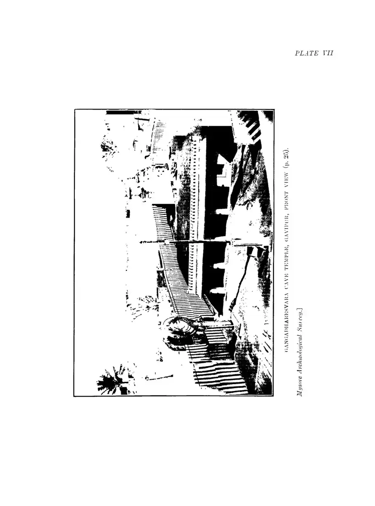
- GANGADHARESVARA CAVE TEMPLE, GANTPUR, FRONT VIEW (p. 25)
3. DELHI GATE, FORT.
The old Bangalore fort has now almost disappeared except for a small portion of it near the north or Delhi Gate. Here stand portions of the old walls with their gateway. The middle wall is an old Hindu structure with a right-angled doorway and a guardian Hanumān on the inside. Tipu appears to have closed this up and to have added protecting and inner walls so that the three walls had three high arched gateways through which the road passed in a 'Z' form. These portions are now in the possession of the Health Office. Just above the old Hindu gateway, inside a projecting round bastion with its cannon-mouthed parapet, are three chambers two of which appear to have been guard rooms, the older one being a powder magazine. At the head of the latter stairway has now been put up a memorial tablet over the dungeon:
"In this Dungeon were confined
Captain (afterwards Sir) David Baird and many others prior to their release in March 1785."
Just to the east of these gateways Lord Cornwallis effected a breach in 1781 through which he entered and took possession of the place. A tablet recording this fact has been put up and is visible from the road side:
"Through this breach the British Assault was delivered
March 21st, 1791."
4. GAŹGĀDHARĒŠVARA CAVE-TEMPLE, GAVIPUR.
On the south-west of Bangalore in Gavipur there is a large cave temple dedicated to Gaṅgādharēśvara. (Pl. VII.) It is said that the sage Gautama lived in this cave and worshipped the linga which appears to be a natural one and that Kempe Gauḍa rediscovered it. Between two horizontal rocks a crevice forms a large cave inclined backwards towards the north-west. The supply of a stream of water inside the cave during the rainy season formed a small pool of water which enabled ascetics to live here. The overflow of this pool is said to reach the Kempāmbudhi tank through clefts in the rock. In the days of Kempe Gauḍa the cave appears to have been partitioned into the Śiva shrine in the centre, the Pārvatī shrine to the west and the safe and water supply chamber on the north-west. Each of the two shrines has a narrow low-roofed pradakshiṇā and there is another pradakshiṇā passage
4 going round both the shrines. In front of each shrine are pillars of varied designs, the two belonging to the Śiva shrine having rounded pot-shaped mouldings of the Chōła Bali-stambha type. It is possible that these may hail from the Chōła times even. The other structures are all of a later time.
In the passages are kept the following images: Bharadvāja, Shaṇmukha, Chaṇđikēšvara, Dakshiṇāmūrti and Sūryanārāyaṇa in the god's pradakshiṇā; Yajñēšvara, Saptamātrikās, Kālabhairava, Vīrabhadra, Honnādēvī and Subrahmanyēšvara in the bigger passage; and Vighnēšvara, Śakti Gaṇapati and bull in the hall.
A pillared mukhamaṇtapa with a stone slab ceiling has been built in front of the hall, and in the yard in front are found four huge monoliths of great interest. Two of them are large discs ( tālavyajana ) each about 25' high (Pl. VIII, 1), mounted upon stone pillars and the other two are triśūla and đamaruga. (Pl. VIII, 2 & 3). A similar stone umbrella has been erected higher up the hill. (Pl. VIII, 4).
The two brick towers do not appear to have been built exactly over the shrines of the god and goddess.
A brick chamber for Lakshmīnārāyaṇa is in the course of construction. Its east to west breadth may be reduced so that it will not be an obstruction. Electric lighting may be extended in the pradakshiṇās which are great curiosities with the visitors.
The towers need repair.
There is an inscription buried in the courtyard on a round-headed slab.
Kempe Gauḍa's Watch Tower (1)
To the south-west of Gavipur there is the large tank, Kempāmbudhi, built in the name of Kempe Gauđa of Māgađi. The tank is a deep one and has been built by putting up a dam across a narrow valley between two hills: one touching Chāmarājpet and the other extending towards Gavipur. On the east face of the latter there is a small temple of Durgā called Bandi (? Bhaṇđe) Mahankālamma where bloody sacrifices are made and cracles are delivered. Closeby on the hill top there is a small pavilion of four pillars, with a brick tower which is said to be one of the four watch towers of Kempe Gauđa. It is said to mark the western limit to which Bangalore would grow. On the west a beautiful view is obtained from the tower, of Sāvandurga and the neighbouring hills, and on the north there is the fine tank Kempāmbudhi. Probably Kempe Gauđa used to receive fire or racket signals from this tower when he stayed in Nelapatṇa or Sāvandurga.
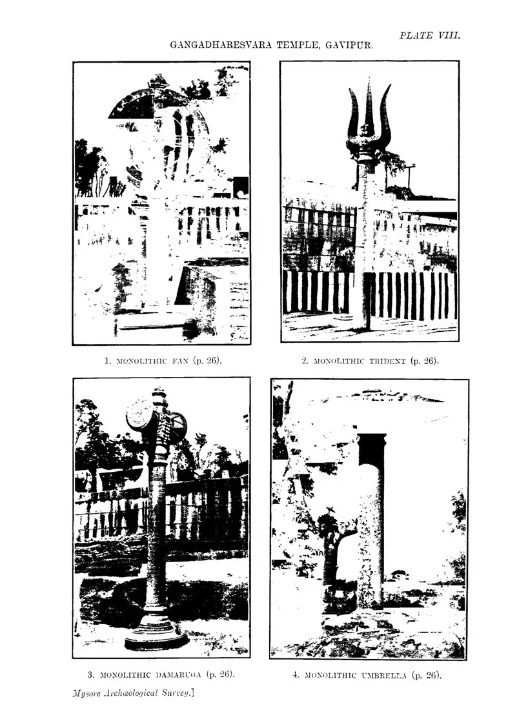
- MONOLITHIC FAN (p. 26)
- MONOLITHIC TRIDENT (p. 26)
- MONOLITHIC DAMARUGA (p. 26)
- MONOLITHIC UMBRELLA (p. 26)
The memorial tablet reads :—
“ This is one of the four
Watch Towers said to have been built by the famous
Kempe Gowda of Magadi
1521-1569 and marks the limits to which it was predicted that the town of Bangalore would extend ”.
Basavanguḍi Bull temple
On the rock of Basavanaguđi there is a large temple with a large pillared garbhagriha hall and a mukhamaṇṭapa dedicated to Nandi. On a high platform in the hall is a large monolithic recumbent bull, about 10' high and 15' long. It is of granite and is carved with ornaments, etc., as at Lēpākshi. It is not so fully or finely worked as the one on the Chāmuṇđi hill. It has nothing remarkable about it except its hugeness and its commanding position overlooking Bangalore. It is probably of about the time of Achyutarāya when the first Kempe Gauđa came into prominence.
Behind the hall of the bull there is a rock chamber over which stands the vimāna or tower. A monolithic pillar 45' high stands in front of the temple.
On the pedestal of the image is a Kannađa inscription of the 18th century, which is published in E. C. IX, Bangalore District, as No. 70 of the Bangalore taluk. Since, however, the last line of the inscription is wrongly read there, a revised reading is given below :—
¹ Basavēšvarana pādadalli Vrīshabhāvatī enisikomba nadhi huṭṭi paśchima-vāhini yāgi naḍeyutalidhe.
“ At the foot of this Basavēšvara the river Vrīshabhāvatī originates and is flowing westwards.”
The wall to the west of the hall doorway is leaky and should be repaired.
Bugle Rock
About a hundred yards north of the temple is the Bugle Rock from which Kempe Gauđa's bugle is said to have given signals to the people of Bangalore. It commands a fine view of the whole of Bangalore. The neighbouring rocks are used for advertisement purposes which must be prevented.
Kempe Gauḍa's Watch Tower (2)
This tower bears the same memorial tablet as the first one. It is situated to the east of the Lal-Bāgh and is the Southern Watch Tower on a rock. Its brick superstructure is Moslem in character. It is doubtful if the tower is that of Kempe Gauđa's time. Even the pillars are quite plain and rude.
Part II: Study of Ancient Monuments › BangaloreLal-Bagh
The Lal-Bagh garden was originally planted by Hyder Ali 1 . The Horticultural Exhibition building bears a memorial tablet which reads :—
This foundation stone of
Lal-Bagh Horticultural Exhibition Building was laid by His Royal Highness
Prince Albert Victor Christian Edward of Wales, K. G. K. P.
on the 30th November 1889, on the occasion of His Visit to Bangalore.
Among the interesting objects in the garden may be noted the Glass house, the Band Stand, and the Māhāraja's statue with the Goddess of learning on the west and on the east, with the Goddess of Justice having a pair of scales in one of her hands.
The Cenotaph
Sōmēśvara temple; Ulsūr
The cenotaph is a tall structure with a large cubical base about 12 feet cube and an obelisk rising up above it to a height of about 45 feet. At each corner of the cube is a large vase-shaped ornamentation. On the east face is the old inscription set up soon after the fall of Seringapatam. On the north and south faces are large tablets mentioning the casualities in the Third Mysore War of 1791-92; while the tablet on the west face gives the list of those who fell or were wounded in the last Mysore War of 1799.
11. SĀMĒŠVARA TEMPLE, ULSŪR.
In the heart of Ulsūr there is a large temple of Sōmēśvara, which is stated to have been a Chōła structure rebuilt and enlarged by Kempe Gauđa. It consists of buildings in two stages :—
The first stage consists of the garbhagriha, the sukhanāsi, an open second sukhanāsi of three ankānas and a navaraṅga with typical 17th century pillars having sixteen-sided shafts and cubical mouldings with relievo carvings upon them. On the inner sides, these latter have also ornamental pilasters and the brackets have mango drops. In the north portion of the navaraṅga behind protective bars are stored more than a score of Šaiva metallic images which are used for various processional purposes.
Round this first stage runs a pradakshinā belonging to the second stage. To its east is a large pillared manṭapa of 48 pillars. These latter are typically Dravidian, some of them having lion brackets, others projecting additional pillars and still others having cubical mouldings. Each face of each moulding has a carved relief and some of these are highly interesting. Many of them are curiosities, like a tiger slaying a man, birds with varied heads, etc., as at Nandi. In the central aisle the roof appears to have had originally an opening, one ankāṇa broad and four ankāṇas long. This has been subsequently covered over. The basement of the manṭapa has a cornice with rope ornamentation. Guarding the navaraṅga doorway are images of Rāvaṇa lifting Kailāsa, on the south, and of Vaishṇavī slaying the buffalo, on the north, in relief.
On the north of the manṭapa the images of the Navagrahas are worshipped. These images are said to have been installed about forty years ago.
Outside the upper walls of the pradakshinā a large number of relief images are carved, interspersed by ornamental turreted pilasters and niches with kalaśa pedestals. Among these images may be identified the twelve Rāśis consisting of anthropoid figures riding upon their respective symbols; ṣrishis; elephants; purusha-mṛriga; and other Šaiva figures.
To the north of the god's shrine is a temple for his consort, which has on its walls relief sculptures very closely resembling those upon the Venkaṭaramaṇa temple in the fort, consisting of processions of the Trimūrtis, the seven ṣrishis, the twelve Ādityas, the eleven Rudras, the eight Dikpālas, etc., attending the Girijā-kalyāṇa. The marriage scene is very interesting, since it shows bearded Brahma before the fire and Himālaya with a mountain on his head pouring water in dhārā .
In front of the Dēvi temple stands an ardhamanṭapa with four pillars of lion brackets, and with a large set of 'S' shaped eaves as in Vijayanagar. Both the shrines have brick towers. The prākāra of the temples has no verandah and the mahādvāra is a well ornamented one with a high brick tower. The temple is an important one. There are a Nandi manṭapa, a Balipītha and a Vṣrishabha-dhvaja in front of the temple.
Kempe Gauḍa's Watch Tower (3)
(East Watch Tower.)
Near the Ulsūr tank bund is a tower with stone pillars and a brick superstructure like those of the other two towers.
Plants are growing on the tower. They should be immediately removed. The area is in the occupation of the sappers and miners. The Resident may be addressed in the matter.
Kempe Gauḍa's Watch Tower (4)
(North Watch Tower.)
Near Hebbāl close to the toll gate stands the North Watch Tower of Kempe Gauđa. It is similar to the one near Kempāmbudhi tank and is in a good state of preservation. Near it is an old guard room which is in a very dirty condition. If it serves no purpose, it may be dismantled.
Ardēśahalli
All the inscription stones at Ardēšahalļi are intact except No. 41 which is broken and needs to be fixed up carefully with cement so that the characters might not be obliterated. The inscription in the land of Venkatīga, a barber, may also be brought and set up in the small stone enclosure. The latter might be locked and kept in charge of the Patel.
Part II: Study of Ancient MonumentsKundāṇa
Hill Fortifications
The Kundāna hill is a flat-topped rock about 200 feet high (3,305 feet above the sea level), rising in a steep precipitous ascent on the west, south and north and sloping gently towards the east. The pathway leads up from the east through four fortifications mostly of the late Vijayanagar and Pāllegār periods and having stone doorways. Some of these walls have large blocks at the bottom without plaster or cement, while others are made of small pieces of stone piled upon one another. The hill top is about 100 yards long and 50 wide and oval in shape. On the top there are a natural stone pool, about 20 feet in diameter, a temple of Channarāyasvāmi facing east, a number of old type stone foundations and basements and a stone pillar about 13 feet high with a square bottom, an octagonal shaft and a roundish top. Most of these relics appear to belong to the late Vijayanagar days. Since in many inscriptions of Rāmanātha Ballāla Kundānada nelevīđu is mentioned, it has been surmised that one of the foundations here is that of his palace. This matter is very doubtful. Recently, without the knowledge of the Archæological Department, the largest of these foundations has been rebuilt in size stone and cement to the size of about 30' \times 12' \times 4' . This ought not to have been done without sanction. The temple has a front chamber and a back one, the latter being a low roofed cave about 10' square. In the latter an image of Janārdana, about two feet high, with two consorts is worshipped. It is of rude Pālļegār workmanship. In front of it is a small Āñjanēya temple.
Part II: Study of Ancient MonumentsDēvanhaḥli
Sarōvara or Stone-Built Pond; Birth place of Tipu Sultan; Khas Bagh; Ancient Sculptures
The stone-built pond ( sarōvara ) about 100' square, with an Āñjanēya temple on its west side is evidently of the late Vijayanagar or Sarovara or Stone-Built Āvati days. (Compare the Santehonda in Chitaldrug and elsewhere.)
Birth place of Tipu Sultan. The structure now existing to indicate the birth place of Tipu Sultan, is one about five feet high with a triangular pediment top and bears a stone tablet. The place around deserves to be converted into a park. The question of constructing a structure here over the monument may be considered. It has a good compound wall. The land around may be acquired.
A large area which was formerly known as the Khas Bagh now contains many tamarind trees, a few mango trees, a dried up small pond once very deep, and a raised platform where Tipu is said to have been occasionally enjoying recreation. The proposal to acquire the area and hand it over to the Municipality for its conversion into a public park may be considered.
The sculptures in front of the Taluk Office are said to have been brought from the surroundings of Gaṅgavāra. These are ancient Ancient Sculptures. Pallava sculptures which must be preserved. Two are of Veñkatēśa and the third has rosary, trident, vajra, and kaṭihasta. The last bears śikha with rudrāksha and is about four feet high. The images, though rude, are still the work of the late Pallava times as seen from their ornamentation and body shapes. The ears have sarpa-kundalas. The Vaishṇava images have kirṭtamakuṭa, makara-kundala and prabhā or halo, their hands being thus disposed : abhaya, chakra, śankha, and kaṭihasta, but having no phālāksha. One of them has prayōgachakra and both have yajñōpavīta and ornamental necklet. The faces which have damaged noses are flattish and they have the ancient look familiar to us in the Bhārhut sculptures. Could the Veñkatēśa image of 'Tirupati be a Pallava image of this type? The images wear upper cloth or dhōti whose folds are marked by incised lines. The height of both the images is about 5½'.
Near by are kept mutilated images of Gaṇapati with a peculiar jaṭāmakuṭa and of a (headless) lady seated in padmāsana with the hands folded.
Near the tennis court are preserved a few more small relievo images among which a smaller image of Vishṇu is of the same type as the larger ones.
The fort wall around the town is an interesting structure of Hyder's days. (Pl. XI 1.)
Gangavāra
Gaṅgavāra, the Gaṅgapura of the inscriptions, is now a small village about nine miles to the south-east of Dēvanhaļli. In the southern quarter of the village stands an old temple of Šiva known as the Sōmēśvara temple. In the annual report for the year 1927 it has been called Tablēśvara. This is a misnomer since that name appertains to the Ēśvara of the neighbouring village Chauđappanhaļli.
The temple has its mahādvāra to the north and is crowned by a boat-shaped low granite Chōļa tower. On the outside there stands a pillar with an inscription. Its inner porch of stone is supported by two pillars of the famous seated-lion type which is found in some of the Pallava temples at Conjeevaran and elsewhere. This is an important clue to the antiquity of the temple but we are not sure whether it is a Pallava or Chōļa work. The temple proper consists of a garbhagrīha facing east containing a linga and relievo elephants facing each other on the sukhanāsi doorframe. In the sukhanāsi are kept the images of a Bhairava reclining on a dog, and of a Pārvatī, both of 18th century workmanship. The present navaraṅga has a low roofed wall, about six feet high, four of whose pillars are of the round bell-shaped granite kind as in the Pātālēśvara temple at Talkāđ, the others being rude octagonal Chōļa works. The south door of the navaraṅga opens into another hall of nine aṅkaṇas used formerly, perhaps, as a Vishṇu shrine. Reclining against its wall is now kept a relievo image, about 3 feet high, with jewelled kirīṭa, halo, kunđala, necklet, yajñōpavita, and two hands only, the right being in abhaya and the left in kaṭihasta. The image is a fine one in good preservation and is probably that of some god or some hero. If the latter, it may be some Chōļa prince: possibly Rājādhirāja. Some inscriptions on the outer wall of the southern extension show that this is a Chōļa structure. In the proper navaraṅga are now kept a Sūrya image, a Nandi bull, some nāga stones, etc. The original Gaṇapati and Pārvatī images of this temple had been broken and hence were removed to the Taluk Office, Devanahaļli. The door of the navaraṅga opens into a raṅgamanṭapa with three entrances, on the north one of which is the Tamil inscription stating that they were made by one Kannaṇan. 1 The four granite pillars of this manṭapa have rounded shafts with pendant garlands, etc., indicative of Chōļa work.
Around the prākāra walls are the ruins of a verandah whose date is uncertain. The original navaraṅga and the southern one also are provided with perforated stone windows. The exterior of the southern navaraṅga has a better finish and is in the cornices, etc., independent of the original navaraṅga. Under its granite eaves crowned with horse-shoe arches of poor workmanship is a row of swans. Above the eaves of the original garbhagrīha runs a row of lions with makara-head
1 E C JX Dēvanahaļli No. 77 (a) corners, while underneath the eaves is a row of swans. The two Vaishṇava dvārapāla images now kept in front of the Taluk Kacheri are said to have been formerly the guardians standing outside the small porch. In front of the mahādvāra is a balipīṭha, about 5' high. In the north-east corner of the old compound are the remains of a large room, perhaps the old kitchen or yāgaśālā and its age is indicated by the row of swans running under its eaves. These swans are also seen on the lintel of the mahādvāra. On the whole the inscriptional, architectural and sculptural evidences suggest strongly that the monument is a Chōla one, the only Pallava feature being the hon pillars. It is possible that the Chōlas borrowed these pieces.
Outside the mahādvāra stands a ruined shrine of evidently round Chōla pillars and cornices, which might have been a temple of Vishṇu or Dēvī. Its roof has fallen in and there is little chance of saving it. Among the cornice structures may be noticed swans, women, lions, Gandharvas, and two swans carrying aloft a tortoise.
A stone oil-mill, evidently belonging to the temple, lies in the compound.
The ruined temple in front may be repaired or removed. The flooring of the temple and the walls which are out of plumb may be reset wherever that is possible. The main temple requires numerous repairs and an estimate may be prepared and sent in.
Conservation.
Part II: Study of Ancient MonumentsKaivāra
History
Kaivāra, about 7 miles from Chintāmaṇi, is a village of very great antiquity. It is situated at the western extremity of a range of hills consisting of Ambājidurga and Rahmāngarh. It is found mentioned as a centre of a Vishaya or district known as the Kaivāra-vishaya from the days of the Gangas down to the Vijayanagar days. It abounds in inscriptions the great majority of which are in mixed Tamil and Grantha characters. They indicate that the gods Amaranārāyaṇa, Bhīmēśvara and Sahadēvēśvara were already there about 1283 A.D. It is not known if any of the antiquities go back to an earlier day. Such of them as now exist in the temples how that Kaivāra was an agrahāra town the temples of which were constructed and endowed about the year 1280 A.D. As usual in old town planning, the Amaranārāyaṇa temple was built in the middle of the town with the Bhīmēśvara temple on the north-east and the main tank of the town extending to the north. The Amaranārāyaṇa temple directly faces a hill one of whose rocks is pointed out as the dwelling place of Bakāsura of the Mahābhārata. From a horizontal crevice in the rock pours out a coloured liquid which is said to be reddish during certain seasons and whitish at others. It is said to be the blood and pus of Bakāsura. Since there are three ponds on the hill top, water is very probably percolating through
History.
5 some kind of mineral earth. It is said that monkeys and birds drink the liquid. The character of the mineral requires examination.
Amaranārāyaṇa temple
Outer view; The Entrance Porch
A mahādvāra of the late Vijayanagar times admits us into a compound in the centre of which is situated the temple which faces 30^{\circ} north of east. The compound wall is modern having been put up after Rice's days. The temple consists of a garbhagrīha with a brick tower, a narrow open sukhanāsi, and a navaraṅga with four pillars and a small cell on the north and a stone screen window on the south. In front of the navaraṅga is an entrance porch of one square. (Plate IX, 1.)
The outer wall rises over a basement of three cornices and its monotony is broken by pilasters crowned by mango-drop capitals and by shallow vacant niches. No Yaksha or other figures are found in the frieze below the eaves; and the latter have an insignificant deep 'S' shape. On the basement cornices and walls of the temple numerous long Tamil inscriptions are found. Some of these are now covered with whitewash which should be removed. The brick tower or vimāna is neither highly ornamental like later towers nor solid and plain like that of the Gandhavāraṇa-basti.
The entrance porch is one of the finest in the State and is supported by four pillars of hardish dark stone like that used for the The Entrance Porch. kalyāṇamanṭapa at Nandi. (Plate X, 1.) The two front pillars are highly ornamented and are not of the usual Dravidīan form. though definitely belonging to that style. Their square shafts contain relievo vimānas of the boat or square shape with either lions or other images in the canopies. Over the shaft is a pot-shaped or inverted bell-shaped moulding of the indented square plan over which again is the umbrella and above it the large flower. The capital has brackets of the pendant bud type. The capital of the northern pillar is beautifully worked with flying lions, makara heads, Gandharvas, etc. The work generally reminds us of the Nandi kalyāṇamanṭapa, though different in design, and also of the pilasters of the Vaidyēśvara temple at Talkāḍ, though the latter are inferior in workmanship. The inner pillars have ornamental pilasters borne on the heads of seated lions. These lion pilasters appear to be inferior imitations of those at Gangavāra. The navaraṅga doorway is a piece of fine workmanship in dark hard stone elegantly designed. On either side of the sill which contains a group of Gandharvas, dancing and singing, is a kalaśa from which spring up creeper bands. On the south jamb these contain swans, peacocks, lions, tigers, ridden elephants, etc., and on the north jamb and the lintel the figures are mostly of Gandharvas. The centre of the lintel has only a lion face. There are also well carved floral bands.
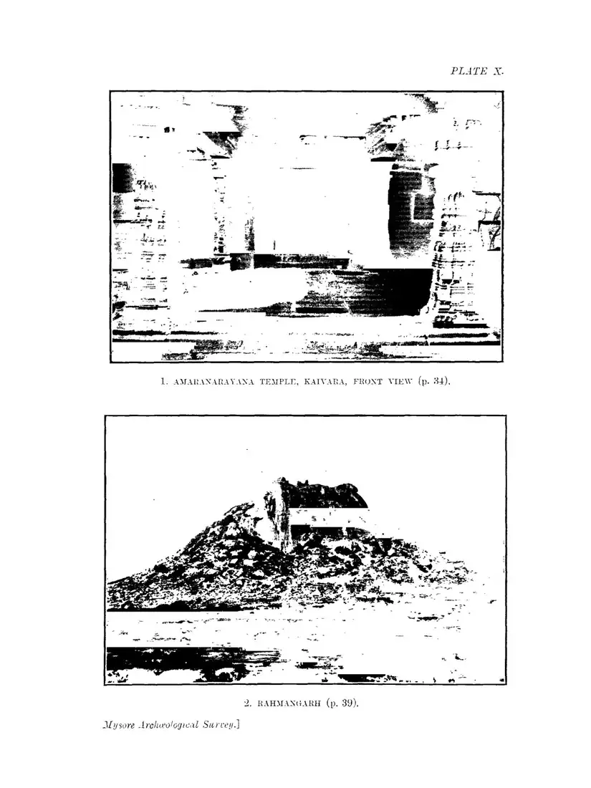
- AMARANARAYANA TEMPLE, KAIVARA, FRONT VIEW (p. 34)
- RAHMANGARH (p. 39)
The navaraṅga is a hall about 25 feet square with a pierced stone window, on the south, of the Gandharva scroll design and a cell in the north containing a relievo group of Rāma, Sitā and Lakshmaṇa of, probably, Vijayanagar days. There is reason to doubt if the entrance of this cell is in its original form. The navaraṅga ceilings are plain except for the central one which is flat and divided into nine squares, the central square containing a three-faced Brahma seated in sukhāsana on a swan seat and holding a rosary and a kalaṣa, while the two front hands are perhaps damaged. Around him are the eight Dikpālakas. The pillars resemble those in the Yōganandi temple at Nandi. The navaraṅga pillars which are also of darkish stone are of the same character. They are thin and square and generally resemble the pillars of the porch. Each has a slightly different design. The one on the southwest has an octagonal upper shaft with pot, umbrella and flower mouldings. The north-west pillar is the finest and is square, except for an octagonal waist. It has numerous panels finely carved and among these may be described a few :
1. Dōhaļa—a lady with a parrot kicking a tree.
2. Kālīngamardana.
3. Gods riding on lions, yāļis, Lakshmīnarasimha, Yamaļārjuna, Krīshṇa dancing.
4. Combination of lions and elephants.
5. Lion slaying an elephant.
6. Kōdaṇdarāma group with Hanumān above.
7. Musician.
8. Two-handed figure with consorts, his right hand holding a stick with a spiral end. This cannot be the figure of Krīshṇa for we have to identify the attribute with a spiral end as a kind of arrow, probably Pāśupatāstra, like the one figured on Pl. VII, M. A. R. 1928. In the case of the latter figure the fact that the left upper hand holds a bow indicates that the corresponding right hand must have an arrow. None of the two lower hands which are in different attitudes has it, the right lower being in abhaya and the left lower taken round the neck of Pārvatī. Further the figure of an animal with what appears to be a long snout, in the right lower field, suggests, if it is a horse as is thought to be, that the sculpture represents Śiva just before his starting for Tripuradahana on which occasion it is stated that he used the Pāśupatāstra. And it is this Pāśupatāstra that Arjuna obtained from Śiva. May the figure at Kaivāra be of Arjuna and his consorts ? It is not impossible, for the hill is associated with Bhīma, his brother. M. A. R. 1928, p. 4 contains a wrong description of the figure at Nāđkalasi: (1) The icon represents Pārvatī-Paramēśvara. (2) The right lower hand is in abhaya; it has no arrow. (3) The right upper hand does not hold a goad; the weapon has a spiral end as at Kaivāra.
On some of the octagonal faces of the pillars are carved lions with rearing lion brackets. Gandharvas and lions adorn the capital.
The sukhanāsi is narrow and small and the garbhagrīha contains a group of Vishṇu standing in the centre with a consort on each side. The main image has its hands thus disposed: abhaya, chakra, śaṅkha, kaṭihasta, and is called the Amaranārāyaṇa form.
Bhīmēśvara temple
The Bhīmēśvara temple is a structure somewhat larger than the Amaranārāyaṇa temple. It also has a garbhagrīha, a sukhanāsi, with an open aṅkaṇa in front and a hall combining the ardhamanṭapa and the raṅgamanṭapa with, in all, six pillars instead of four. The hall has a door to the east without a porch and another to the south with a porch. The outer walls of the temple are less impressive than those of the Vishṇu temple, being almost plain except for a few inscriptions, particularly on the cornices. The brick tower whose plaster has peeled off is seen in its original shape, since it has not been recently plastered like that of the other temple. The south porch is of one square. Its pillars and those of the navaraṅga have the same character, being broad at the base and slightly tapering towards the top. They are square in plan with their sixteen-sided shafts having bands with chain ornamentation. The cubical mouldings have meso-relievos of various gods, heroes, etc., their corners bearing the cobra-hood-like leaf design. The capitals have pendant bud brackets and the central ceiling is flat with Umāmahēśvara in the centre and the Dikpālakas around, as in the other temple. The pillars of the navaraṅga and the south porch along with the damaged mahādvāra on the south appear architecturally to belong to the middle Vijayanagar times, i.e. , the days of Kṛishṇarāya and Achyutarāya, whereas the sculptured ceiling and some of the Tamil inscriptions on the wall take us back to the days of Kampaṇṇa and Harihara II and even to Vira Ballāla III's time about 1294 A.D. A possible explanation is that the original temple of the late Hoysala times was enlarged, provided with new pillars, a porch and a mahādvāra in the middle Vijayanagar days, some of the inscribed cornices of this and the other temples in the neighbourhood being used for constructing its walls. The alternative to this theory would be that the pillars of the navaraṅga go back to before 1300 A.D. which view, however, does not appear to be acceptable.
Minor temples
Conservation
No heading in the body: this section starts at its printed page (37-38).
To the north and north-west of this temple are two smaller ones whose linguas are called Nakulēśvara and Sahadēvēśvara. Both of them are very similar in character having a small towerless garbhagrīha and an approach room in front. The walls of the Sahadēvēśvara temple, however, contain a number of Tamil inscriptions in which the name of one Duṭṭarāditya Rājanārāyaṇa ruling the Kaivāranād in the Nikiriļi Choļa-Maṇđala appears prominently, dated between 1280 and 1290 A.D. This person was probably a Chōļa governor under the Hoysaļas (Cp. Gaṇđarāditya) and it is very probable that he got the Śiva temples constructed. It is said that originally the temples of Dharmēśvara and Arjunēśvara were also in the neighbourhood. Now the former linga lies in the front yard, while the latter is missing from the recent (?) temple which housed it a furlong away to the north.
In the navaraṅga of the Bhīmēśvara temple are now kept the following images:—
1. Kārtikēya on the peacock.
2. Nandi Bull.
3. Relievos of Chaṇđikēśvara, Vishṇu, Bhairava, Chauđēśvarī and Mādhava. In the north cell there is a small image of Pārvatī.
The sculptures on the navaraṅga pillars are described here under commencing from the south-east pillar :—
Chāmuṇđēśvarī.
Goddess with abhaya, aṇkuśa, pāśa and dāna.
Rāma and the Rāmalinga.
Elephant slaying man.
Durgā.
Hanumān trying to uproot linga.
Mōhinī.
Vīrabhadra.
Umāmahēśvara.
Lion killing elephant.
Ladies with ladles.
Elephant worshipping linga.
Huntress dancing.
Rāma with linga.
Bhairava.
Bhairava with dog.
Husband and wife.
Kālabhairava.
Kaṇṇappa nayanār.
South-west pillar : The story of Bakāsura—
Bhīma drives in his cart, fights Bakāsura and hurls a rock against his fallen foe. The other brothers and their mother look on.
Hanumān tries to uproot the linga.
Rāma worships it.
North-west pillar :
Mōhinī.
Andhakāsura-samhāra.
Dakshināmūrti.
Linga hugged by a cobra.
Five-headed deity, with a balance for weighing the linga.
Umāmahēśvara standing.
North pillar :
Ladies dancing at kōlāṭa .
Šiva with trišūla and kamaṇdalu.
Girijākalyāṇa.
Bhīma with his mace.
Devotee worshipping linga.
Huntress getting thorn removed from her foot (Mōhinī ?).
Dēvī.
Vyāghrapāda worshipping linga.
Harihara seated.
North-east pillar :
Mōhinī.
Sadāśiva.
Cobra protecting linga.
Nandivāhana.
Bird-bodied (Kinnara) player worshipping linga.
Mōhinī dancing.
Cow milking over the linga.
Two lions with one head rearing.
Sūrya.
Gaṇēśa.
On the pillars of the porch are also some interesting carvings, like four monkey bodies forming a square with only two heads; a tiger attacking a calf whose mother is trying to defend it, etc.
A compound wall should be put up and the mahādvāra repaired. The vimāna should be carefully replastered. The ground around should be levelled so as to drain off rain water. Battened wooden doors should be provided for the Nakulēśvara and Sahadēvēśvara shrines.
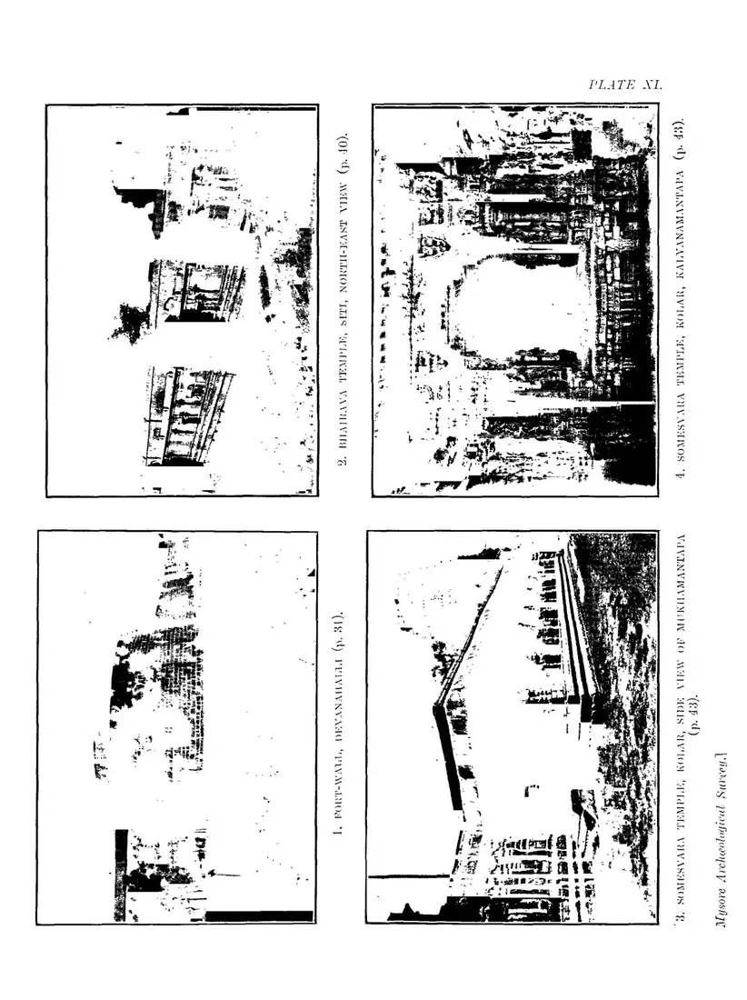
- FORT-WALD, DEYANAMALDI (p. 31)
- BIJAIRAVA TEMPLE, SHIT, NORTH-EAST VIEW (p. 40)
- SOMESVARA TEMPLE, KOLAR, SIDE VIEW OF MUKHAMANTAPA (p. 43)
- SOMESVARA TEMPLE, KOLAR, KALYANAMANTAPA (p. 43)
The trees in the compound of the Amaranārāyaṇa temple must be removed and the area kept clean.
Rahmāngarh
(Pl. X, 2.)
Rahmangarh, so named by Tipu Sultan, is a hill-fort seven miles to the south-west of Chintāmani and of Ambājidurga. It is close to the ancient place of Kaivāra from which it is accessible by a ruined pathway which follows a water course leading up to a formidable fort-wall with a ruined gate protected by two square bastions. The wall is provided with a brick parapet, round bastions, cannon mouths, etc., and a tank of water just behind it. Higher up there is a mortarless Hindu fort-wall entered by a gateway between two round bastions on one of which is a relievo carving of Raṅganātha. There are ruins of defensive walls and guard houses on the top which is not very wide. It is roughly triangular in shape with the entrance from near the north-west angle. Here is a deep natural pool of water converted into a well. Further eastward and a little to the northeast of the bench-mark there is a powder magazine with three chambers, evidently of Tipu's days. There are two pools near by. A little to the east and facing east stand the stone walls of what must have been the chief's house or a palace for Tipu when he visited the place. It is only about 50' \times 25' . A few feet to its east is a small temple (inner measurement 6' \times 6' ) built of size stones, rubble and bricks. It contains a relievo image of Vishṇu as Janārdana, about 2' high, of rude Pāllegār period workmanship. On its right is a bare stone slab, also worshipped. In front of the temple stands a pillar with its top broken and with Hanumān on its west face. On the east and south are two large precipitous rocks which look from the bottom like two gigantic bastions of a fort wall. On a height between them and also facing a precipice, appear the ruins of a fort wall. The view from near the 41st mile stone is one of the grandest for any hill fort in the State, though really this hill top is too small to be of great value from the military point of view. It is said that when Lord Cornwallis took Nandi, Tipu wanted to convert this hill into an important place of defence. But the area is not more than 100' \times 100' Half way up the south-east face under the central precipice is visible a cave in which is said to exist a linga called Tapasēśvara. On that account the hill has been called by the Hindus as the Tāpasagiri.
Part II: Study of Ancient MonumentsĀlambgiri
Tirumalanāthasvāmi temple
Conservation
A description of the temple of Tirumalanāthasvāmi has been given in the annual report of the department for 1930. The temple has a copper plate grant of five plates, containing two inscriptions.
The Lakshmī shrine on the south side of the courtyard has a Kannađa inscription of Šivāji on its wall and is dated 1569 A.D. It is possible that his officers got the shrine constructed.
All round the parapet of the prākāra, as on the Mahādvāra tower, runs a frieze of relievos in mortar, some of which are interesting and depict Rāma's victory over Rāvaṇa, Rāma's coronation, and the story of the Uttara-Rāmāyaṇa. Some of these figures well illustrate the dress and manners of the Vijayanagar times.
The plants growing on the walls may be removed and the bulging southern wall of the navaraṅga reset. It is said that an estimate for Rs. 2,200 has been sent up. It may be sanctioned.
Conservation. The repairs noted here may also be added: (1) the flooring in the kalyāṇamaṇṭapa must be reset and cement pointed; (2) the tower requires repairs here and there.
Part II: Study of Ancient MonumentsSiti
About 12 miles north-west of Kōlār is the Sīti hill where there is an old cave temple containing a natural linga called Šrīpatīšvara. It appears to have been there in the days of Kulōttuṅga Chōlā whose inscription attributable to about 1071 or 1072 A.D. is found on the rock closeby. About 1260 A.D. the Chōlā governor under the Hoysaļas bearing the title Rājanārāyaṇa and Dushṭarāditya appears to have got a small kalyāṇamaṇṭapa of six aṇkaṇas erected to the south of the cave and also a fine little temple of Bhairava. These are the finest architectural structures on the hill. At a later time in the Vijayanagar period a front hall was added to the Bhairava temple. Several smaller shrines were constructed near the cave and a large hall was built up in front of the latter and provided with a mahādvāra in the south-west corner.
The Bhairava temple
The Kalyāṇa Maṇtapa; Conservation
The Bhairava temple is a typical one built by the Chōlā viceroys in the late Hoysaļa period and resembles in some respects the Amaranārāyaṇa temple at Kaivāra. (Pl. IX, 2). The same architect might have built both. The former temple is raised upon a basement, about 2' high, with four cornices. (Pl. XI, 2). Its upper wall is ornamented with finely shaped octagonal pilasters crowned by lotus capitals. The eaves have a sharp 'S' curve and are ornamented with kīrtimukhas. The niches over the sōmasūtra and other outer walls are neatly shaped and contain images like (north and east): Bhairava, Kārtikēya; and (south wall near doorway): the builder and his consort, Gaṇēśa, etc.
Over the sanctum of the temple is a brick and plaster tower of not much significance. The navaraṅga doorway which is 6' × 4' is of black stone and closely
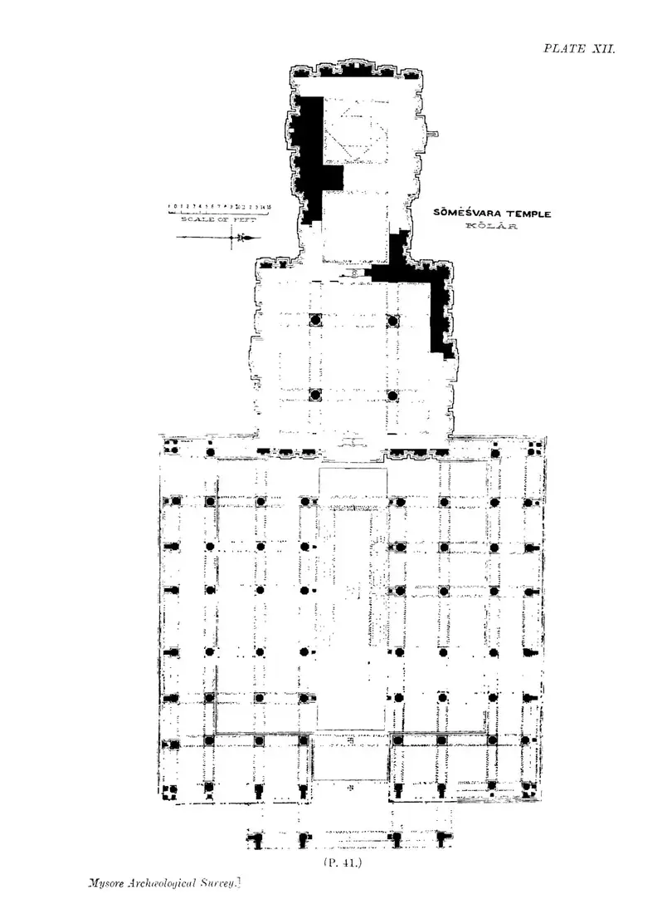
- (p. 41)
Cited in the text: p. 41 ↩
like the similar doorway in the Amaranārāyaṇa temple without its porch. It has its bands of scrolls and flowers with a lion face on the lintel. The navaraṅga pillars also are of black stone and designed somewhat like the two south pillars of the Amaranārāyaṇa navaraṅga. Their workmanship is fine. The central ceiling of the navaraṅga is the only one carved. It is flat and contains Umāmahēśvara surrounded by the Dikpālakas. The navaraṅga pilasters have minor projecting pillars borne on the backs of lions. There is nothing remarkable about the sukhanāsi except that it contains four round pilasters. A small antichamber of 5' × 5' leads into the garbhagriha where stands a relievo image, about 3' high, of Bhairava with four hands holding the trident, drum, snake and begging bowl. He wears a garland of skulls, but neither the dog nor the scorpion nor the goblins appear.
The kalyāṇa-manṭapa is a small one of four aṅkaṇas with nothing important excepting its four pillars. These pillars are definitely of The Kalyana-Mantapa. Hoysala-Draviđian workmanship. The front ones are imitations in granite of the Bhairava navaraṅga pillars. But the back ones have a design of their own being sixteen-sided and fluted and ornamented with horizontal bands of lions, elephants and lion heads with pendant beads.
The temple is badly in need of repair. The mahādvāra is overgrown with plants which should be removed. The upper opening behind the mahādvāra should be provided with an expanded metal protection. The flooring of the whole temple requires resetting. The drain leading out rain water should be repaired. The west doorway should be strengthened and provided with a door. The Śrīpati cave should be walled up on the west, its south wall being removed for the sky light. The window frames should be provided with expanded metal protection. The yāgaśālā to the east of the Bhairava temple should be repaired and used for cooking and oblation purposes. The ground around the temple should be levelled and the steps reset.
In the hall of the navaraṅga are figures of Gaṇēśa, Mahishāsuramardinī, Shaṇmukha and Pārvatī and also Sūrya and Vishṇu. Mahishāsuramardinī and Shaṇmukha appear to be old images of the Hoysala days. The temple is said to possess Rs. 3,000 in State Loan Bonds which amount may be utilised for the repairs.
Kôlār— PAGE
Sômēšvara temple
General Description; History; Cornices of Main temple; Upper Wall; Eaves and Tower; Mukhamaṇṭapa; Kalyāṇamaṇṭapa; Navaraṅga Doorway; Navaraṅga; Sukhanāsi and Garbhagrīha; Conservation
The Sōmēśvara temple at Kōlār is a typical ornate structure of the Draviđian style. (Pl. XII). It is a large building with a high mahādvāra, having a tall tower of brick. The main building consists of a garbhagriha with a brick vimāna,
General Description.
6 a largish sukhanāsi and a four-pillared navaranga. In front of this building stands a large pillared mukhamaṇtapa and in the compound are smaller shrines with a kalyānamaṇtapa in the south-west.
It is strange that no inscription has been found in such an important temple.
History.
Very probably there was one which was destroyed in later times. As it is, the different parts of the temple may be assigned on architectural grounds to two different periods :
The main temple with its elaborately sculptured walls, the inner portion of the kalyānamaṇtapa with its black stone pillars resembling similar ones at Nandi, and the stone mahādvāra have all one character ; the free use of sculptured cornices, the rows of images standing under canopies and between right angled pilasters with incised floral bands and the rows of Yakshas or Yaksha faces under the cornices suggest that they might belong to an ornate Draviđian period which might be of the days of Krishṇarāya and Achyutarāya or of Harihara II, or, more probably, the second half of the 13th century. It was during the latter period that Vira Sōmēsvara Hoysaļa came very greatly under Tamil influence and even employed Chōļa governors at Kuruđumale. These portions of the temple might belong to that period of the Hoysaļa interpretation of Draviđian architecture. It is doubtful if such a large temple could be attributed to anything like the days when the small ornate Chōļa temple of Binnamangala was constructed. There is, however, a similarity in certain features between this temple and even the Vaidyēsvara temple at Talkāđ.
The rest of the temple with its squarish pillars and general similarity to the mukhamaṇtapa at Nandi and that at Ulsūr, appears to be of the later Vijayanagar period.
The basement of the main temple contains four projecting cornices, the lowest of which has a frieze of elephants interspersed with horses, lions, swans, řishis and men. (Pl. XIV, 1). The second cornice has a row of rosettes, while the third one has kīrtimukhas. The fourth cornice is borne by brackets of Yakshas and lions. These cornices produce something like the Hoysaļa effect, though the character of the ornamentation is different.
The middle portion of the wall has a long row of pilasters between which are turreted canopies borne on single or double pilasters definitely of the Draviđian kind, some of the šikharas being square and a few being boat-shaped. Under these canopies stand figures of ladies, řishis, etc., while the single-turreted pilasters arise out of kalaśas with lion heads springing out on either side of them. On the south and north sides of the walls of the main temple are deep and narrow niches, some of which have pierced stone windows.
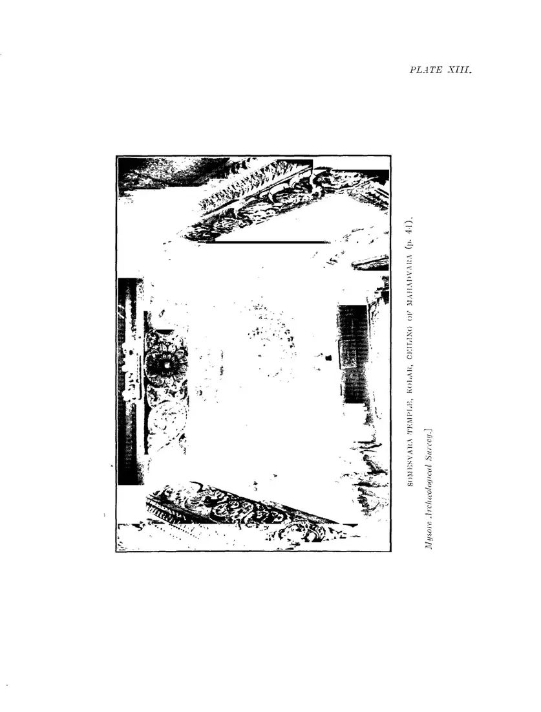
- SOMESVARA TEMPLE, KOLAR, CERTING OF MAHADVARA (p. 44)
Cited in the text: p. 44 ↩
The eaves have a frieze of kirtimukhas with Yaksha heads, etc., while below them is a row of flying Yakshas and another of lions, etc., and a little lower down on the abacus of the pilasters are capitals with pendant drops. The tower or the vimāna is a brick construction which has lost its original character by comparatively recent repairs. It is Draviđian in form and is, however, well designed.
Upper Wall, Eaves and Tower. The mukhamantapa is a large structure with about sixty-four pillars (Pl. XIV 2.) some of which have projecting lion brackets and others have minor pillars of the sixteen-sided fluted kind, while the plainer ones have sixteen-sided shafts with cubical mouldings. All of them have capitals with pendant drops. The large eaves are well made and have the imitation of wood work on the undersurface. (Pl. XI 3.) The central aisle which is about 12' broad has a grand appearance. As at Nandi and at Ulsūr its roof has been to some length raised above the level of the rest of the roof. A well shaped but poorly ornamented Nandi is placed in this portion. One of the pillars bears the Śrī-Vaisbhava caste mark suggesting the date to be the late Vijayanagar period.
The kalyāṇamantapa is a beautiful pillared pavilion situated in the south-west angle of the compound. It appears to have been constructed in two stages: The inner portion of four pillars is an elaborately carved ornate structure closely resembling the kalyāṇamantapa at Nandi. (Pl. XI 4.) Each of its pillars has projecting minor pillars and standing images of gods and goddesses of Vēnugōpāla, etc. The outer faces of the pillars have fine floral designs in relief while the pendant brackets of the capitals have strings of parrots. Borne on these four pillars are beams with a frieze of finely shaped parrots, while further up the dome on its octagonal base are figures of dancing men and women. The dome has a large padma with ornamental parrots and in its centre is a padma pendant bud.
Around this square is constructed the rest of the pavilion, the pillars of which particularly those in the corners, are well carved. Some of the figures riding upon the bracket lions wear beards, trousers, and coats with ribbed designs. Among other sculptures are Rāma's monkeys, Yōgānarasimha, Bhairava, Gaṇapati, a monkey gaping with open mouth at the jack fruits on a tree, etc. Some of these figures bear the virarēkhā . The most probable date of the structure is the 16th century. The structure of the whole mantapa appears to be homogeneous.
The doorway of the navaranga has rosettes and creeper ornamentation in low relief with small Śaivā dvārapālas on the jambs and Gajalakshmi on the lintel. Outside the jambs are bands of Yakshas.
Navaranga Doorway.
The navaranga is a hall with four square pillars which have sixteen-sided shafts and cubical mouldings. On these latter are
Navaranga. carved various images like those of Virabhadra, rishis , Mārkaṇdēya, Śiva in various forms, Vyāghrapāda, Kōdaṇdarāma, dancing Gaṇēśa, Sūryanārāyaṇa, etc. The central ceiling (which has been raised in Mr. Arcot Srinivasachar's days) retains the original carved flat stone with Umāmahēśvara surrounded by the Dikpālas. In the navaranga are placed Gaṇapati, Virabhadra, Śaiva dvārapālas, Nāga images of recent days, and Shaṇmukha riding upon a fine peacock about 5' high. The last is a fine piece of sculpture for the Vijayanagar days.
The sukhanāsi doorway is an ornate piece typical of Vijayanagar sculpture and has a linga and bull on the lintel. The sukhanāsi
Sukhanasi and Garbhagriha. which is about 12' × 10' is interesting because it has two pierced windows. Another bull is kept here. In the sanctum on a low round pedestal is worshipped the large linga of Sōmēśvara.
The mahādvāra and its ceiling are interesting pieces of Vijayanagar workmanship. (Pl. XIII).
The ugly gate may be removed. The Ancient Monuments board may be shifted to a less conspicuous place. The cracked lintel
Conservation. beam of the mahādvāra may be examined by the Executive Engineer. The tower and its śikhara are to be repaired. The compound is to be cleared of all trees, including the newly planted cocoanut trees. The parapet wall may be raised sufficiently high to be protective. The additional land at the back of the temple is to be walled off with slabs, etc., the houses in the area being acquired, if need be. The thick whitewash is to be removed in due course from all the sculptures.
The temple has no funds of its own and these may be provided from the Muzrai funds.
Kôlāramma temple
History
A detailed examination of the numerous inscriptions in the Kōlāramma temple
History. and of the structural evidence available leads to the following conclusions:—
After Rājarāja Chōla the Great conquered Gaṅgavāđi in his 22nd year, he either built the southern part of the temple or at least made a grant of the village of Areyūr (or Arehaļli, 2 miles away?) for the maintenance of the gods. This structure consists of a large garbhagriha facing north and housing colossal stucco figures of the Saptamātrikās of whom Chāmuṇdā or Mahishāsuramardinī alone faces east, treading under her feet a large figure of a fallen Rākshasa. To her left is a small stucco Gaṇapati, while to the right of the group facing west is a god
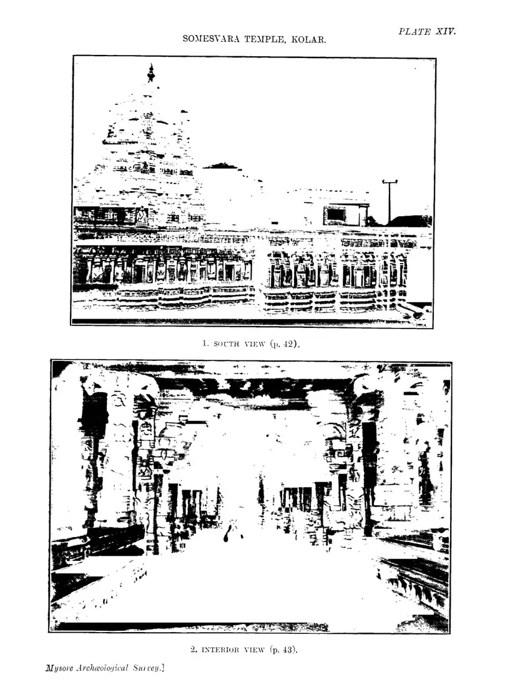
- SOUTH VIEW (p. 42)
- INTERIOR VIEW (p. 43)
holding a dagger and a deer in his back hands, the front hands being broken. This room has four round pillars of granite with sixteen-fluted shafts, the inverted bell moulding and a round wheel-shaped moulding and beaded hangings.
The sukhanāsi or front room to the north is exactly similar, though less wide with similar pillars. It contains a large naked stone relievo of Kapāla Bhairavī said to be the goddess of scorpions. This shrine has no vimāna. Its outer wall is ornamented with three plainish cornices, one of which is octagonal, and square pilasters with beaded hangings in low relief. On the east the sanctum has a pierced window with Śiva and Pārvatī dancing, holding each a dagger and a bowl. The eaves have a row of lion-headed kīrtimukhas with a frieze of dancing Yakshas below it.*
To the north of the shrine appears to have been added slightly later, perhaps before the 35th (?) year of Rājēndra Chōla, another small shrine with a smaller garbhagriha and a navaraṅga of four characterless octagonal pillars with a door to the north and one to the south. One of these bears a Tamil inscription not previously read. In this north shrine were installed the stone images of another set of Saptamātrikās facing east with Chāmuṇdā facing south and an image of Śiva facing north. These images appear to be of dark, perhaps trap stone and are made along with their tōraṇas of one stone each. The image of Kōlāramma is that of Mahishāsuramardinī treading on a demon. (Pl. XVIII, 3). It is about 4' high and has flames darting from its head with an unsculptured tōraṇa around. She wears a jewelled diadem with hangings, a cobra, etc. In the navaraṅga of this shrine are placed a seated Kapāla Bhairava image of naked Śiva, about 3' high, and standing Bhairavī. In a niche is kept a small image of a devotee, shown as that of a Chōla king as at Nandi. It is a late Vijayanagar period image of a Śrīvaishnava saint or bhakta . The outer wall of this shrine is almost similar to the other one except that a frieze of lions runs above the cornice and a large shortish boat-shaped vimāna stands over the centre. It is possible that it is of stone, though covered over with mortar in later times.
These two shrines were given endowments with the permission of Rājēndra by Virapāṇdya who claims to have conquered Raṭṭapāđi and set up a pillar of victory at Kalyāṇi. Jākiyabbe, the daughter of Tribhuvanaiyya, got the east portion of the inner verandah put up with pillars in imitation of the ones in the south sanctum. An officer, by name Mādhava, appears to have built the verandah with sixteen-sided pillars opposite to the second shrine and also the Balipītha. About the same time the manṭapa in front of the inner mahādvāra was built. Some of the pillars here bear the name of Vikramachōla and the titles Sāmantakēsari and Vira Bhīma and are similar to the ones in the south sanctum, though larger in size.
* Cp. Binnamangala : Muktināthēśvara Temple.
The verandah of the inner prākāra was probably constructed by (?) Dimpaṇa Ođeyar who appears to have made a large grant to the temple in the time of Harihara II. It is possible that the outer mahādvāra was set up in the days of Achyutarāya, an inscription of whose time is found on the north wall of the north shrine.
Some of the vīragals excavated in the compound of the temple appear to be Gaṅga in character. It is quite possible that the shrines actually hail from the Gaṅga days.
Part II: Study of Ancient MonumentsKuruṭumale
Sômēšvara temple
Conservation
(Pl. XV.)
Detailed notes on the Kuruđumale temples have been published in the Annual Report of the department for 1930. Here are mentioned the relievo sculptures on the cubical mouldings of the pillars in the porch and of the pilasters in the sukha-nāsi of the Sōmēšvara temple. (Pl. XVI, 1).
Porch. —Commencing from the east and moving clockwise :—
East pillar (Pl. XVI, 2).
East face—
1. Umā and Mahēšvara with Nandi.
2. Girijākalyāṇa.
3. Umāmahēšvara with Sūrya between them.
South face—
4. Jalandharasamhāri.
5. Andhakāsurasamhāri.
6. Gajāsuramardana.
West face—
7. Lingōdbhavamūrti.
8. Harihara standing.
9. Ēkapādamūrti (Šiva with his consorts all standing on one leg.)
North face—
10. Umā and Mahēšvara attended by Vishṇu.
11. Šiva and Pārvatī making love.
12. Bhairava.
West pillar.
East face—
13. Umā and Mahēšvara standing.
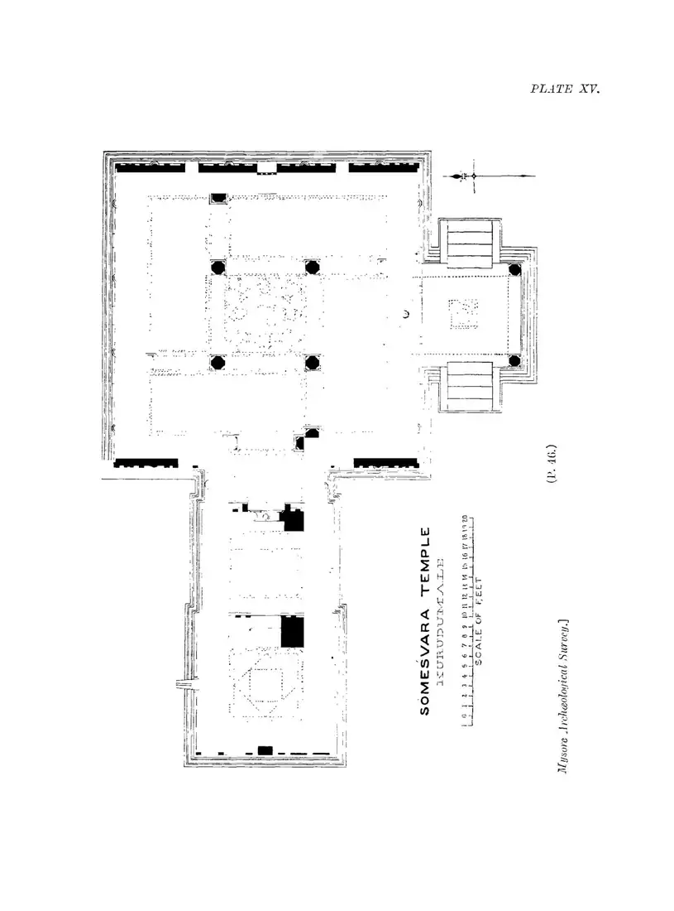
- (p. 46)
Cited in the text: p. 46 ↩
14. Ardhanārīśvara.
15. Umā-Mahēśvara in sukhāsana.
South face—
16. Šiva with bow and arrow.
17. Dakshiṇāmūrti in sukhāsana.
18. Šiva seated in yōgāsana.
West face—
19. Linga with human faces.
20. Harihara.
21. Ēkapādamūrti.
North face—
22. Bhairava.
23. Šiva manifesting to Arjuna.
24. Sadāśiva in sukhāsana.
Navaranga.
South-east pillar.
East face—
25. Yaksha (Kubēra ?)
26. A king worshipping a linga.
27. Mārkaṇdēya.
South face—
28. Lion slaying elephant.
29. Krīshṇa in butter dance.
30. Umāmahēśa in sukhāsana.
West face—
31. Kauṇdinya Rīshi.
32. Cow milking over linga and licking it.
33. Mahishāsuramardinī (as in the window at Nandi with lion in the back ground).
North face—
34. Lion.
35. Queen worshipping linga.
36. Šivalinga kicking away Yama to protect Mārkaṇdēya.
South-west pillar.
East face—
37. Boy dancing with snake across his shoulder.
38. Bhairava.
39. Šiva with Umā and Gaṅgā.
South face—
40. Yaksha.
41. Woman dancing and man drumming.
42. Two Kāpālikās dancing.
West face—
43. Nandi.
44. Two devotees.
45. A Yōgi.
North face—
46. Lady dancing—unfinished.
47. Lady dancing, with two hands only, one of which holds spiral weapon.
48. Two-handed male and female human beings dancing.
North-west pillar.
East face—
49. Yaksha blowing conch.
50. Woman bringing milk to Šiva.
51. Ēishi riding on a tiger.
South face—
52. Lion killing elephant.
53. Durgā treading on Rākshasi.
54. A musical group of three persons with four legs (a female in the middle with tāļa and a man with đamaru on each side.)
West face--
55. Two men wrestling.
56. A Ēishi seated.
57. Man holding axe, and dancing.
North face--
58. Sugrīva and Hanumān in conference.
59. Vāli and Sugrīva fighting.
60. Man on horseback.
North-east pillar.
East face—
61. Yaksha dancing.
62. Two men dancing.
63. A lady dancing.
South face—
64. A seated Ēishi.
65. Gaņēsa dancing.
66. Dakshiņāmūrti.
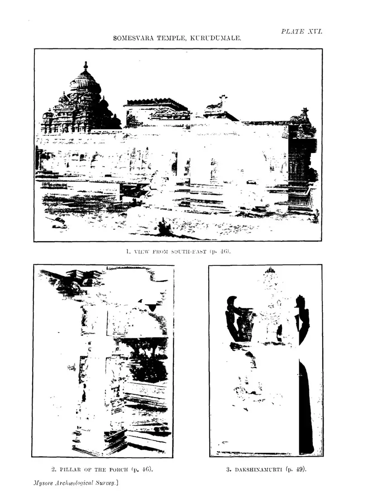
- VIEW FROM SOUTH-EAST (p. 46)
- PILLAR OF THE PORCH (p. 46)
- DAKSHINAMURTI (p. 49)
West face—
67. Yōgi seated.
63. Vāli and Sugrīva fighting.
69. Two-handed Šiva on elephant.
North face—
70. Elephant.
71. A nobleman devotee.
72. Devotee seated doing japa .
The sukhanāsi pilasters have :
73. Manmatha.
74. Kaṇṇappa Nayanār.
75. Kaṇṇappa Nayanār.
76. Chief on horse back.
77. Dancing group.
78. Yaksha.
79. Rider on elephant.
80. Wheeling acrobats, etc.
One of the most interesting figures in the navaraṅga is that of Dakshiṇamūrti. (Pl. XVI, 3).
The ugly granite slabs put into the outer niches should be removed. The yard should be levelled and kept clean and free from debris.
Part II: Study of Ancient MonumentsĀvaṇi
Rāmēšvara temple
General Description; History; Lakshmaṇēšvara shrine; Śatrughnēšvara shrine; Aṇjanēšvara Shrine; Bharatēšvara shrine; Rāmēšvara shrine; Pārvatī shrine; Kāmākshī shrine; Other Buildings; Conservation
A note on the Āvani hill was published in the annual report of the department for 1930. The temples in the village are here studied in greater detail. The large group of these ancient temples is generally known by the name of Rāmēšvara and stands at the south-west corner of the hill. Within a courtyard which has a gate to the south and one to the east stand about a dozen different buildings in all, of which ten are dedicated to the worship of different deities like Šiva, Pārvatī and Subramhanya. The Šiva group stands peculiarly placed; in the centre is a temple of Pārvatī and to its west in a line from south to north stand the Lakshmaṇēšvara, Rāmēšvara and Bharatēšvara shrines; to the east in a line stand the Šatrughnēšvara and Añjanēšvara shrines and two smaller shrines of Sugrīvēšvara and Aṅgadēšvara. Near these latter is a large mānastambha.
General Description.
7
Local mythology attributes the consecration of these deities to the days of Šrī Rāma and his brothers. But the oldest inscriptions, one of which is found on the door jamb of the Bharatēsvara shrine and the basement cornice of the Šatrughnēsvara shrine, mentions a Ganga king with the title Prīthivī Ganga. This indicates that the temples go back to the late Ganga times. At the same time on the cornices of the Šatrughnēsvara and Lakshmanēsvara shrines and on the mānastambha, Kannađa inscriptions of Vira Noļamba, Dēvabbarasi, etc. are found and from another inscription 1 on a pillar outside the southern gateway we learn that this queen got constructed a lake called Dēvabbesamudra and a Vishnu shrine at Horavangala which may be Betmangala where the Vishnu shrine has to be examined for Noļamba traces.
The record states also that at Āvaņi or Āvaņya she got constructed a temple for the prosperity of her second son under the name Noļamba Nārāyanēsvara. We are not sure whether this linga was the huge ancient looking Lakshmanēsvara linga or the more central Rāmēsvara linga or the whole group of lingas in the place. On the wall of the Lakshmanēsvara temple there is a relievo image with an inscription of the famous religious teacher of the name Tribhuvanakarta, a Šaiva Brahman who is said to have had tapōrājya in the place for a long period of time. A little later the Chōļas occupied the country and Kulōttunga left a long record on the cornice of the Rāmēsvara temple.
The character of the pillar of the Rāmēsvara navaranga and of its cornices, etc., raises a little doubt whether the Rāmēsvara shrine and that of Sītā-Pārvatī belong to the Noļamba period. It is just possible that they might have been constructed, or at least renovated, with old materials in the Chōļa days or even in the days of Iļavaņji Vāsudēvarāya. The temple of Kāmākshī, however, has so many boars and daggers on its walls that it may be attributed, at least the portion above the basement, to the Vijayanagar days. Of the mahādvāras the south one is not later than Chōļa days while the one on the east belongs to the 13th or 14th century. Thus it is seen that the most important of the temples at Āvaņi belong to about the 9th century.
The Lakshmanēsvara shrine is the most ornate in the compound. (Pl. XVII) its stone walls rise on a basement of five deeply carved cornices, one of which is ornamented with a row of small horse-shoe arches and another bears a frieze of elephants, lions, yālis and makara heads in active poses reminding us of the work of the Bāṇa and Rāshṭrakūṭa days. The upper portion of the wall is relieved by a series of right-angled pilasters, the canopies of which are ruined and have disappeared, being substituted by a brick structure (Pl. XVIII). Under and near these pilasters are a number of carved images, among which may be noticed a dvārapāla, Yakshas,
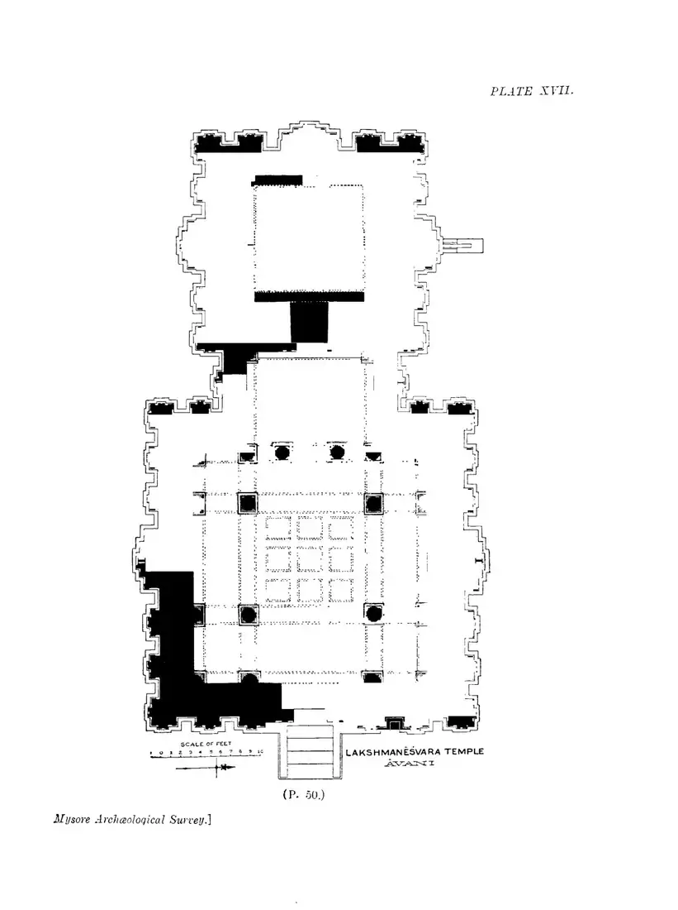
- (p. 50)
Cited in the text: p. 50 ↩
images of Šiva, Bhairava, Bhairavī, Vishṇu, Gaṇēśa, Durgā, Tribhuvanakartar (a figure seated in yōgāsana with a bag or jōlige hanging from the left side). Below the last is a sōmasūtra of Lakshmaṇēśvara with the head of a makara from whose open month flies forth the image of Sūrya. Other figures are Mahishāsuramardinī (in pierced window) spearing an anthropoid buffalo, Sūrya, dancing Yakshas (in pierced window), and Naṭarāja. The door steps have no porch but are flanked by two yāli relievos.
The navaraṅga has four pillars of the indented square type with two cubical mouldings and a wheel-shaped moulding. These pillars bear relievo groups of finely designed figures.
The sukhanāsi is open but is entered between two round pillars with pot and wheel-shaped mouldings. The navaraṅga ceiling has a well executed surface on which Umā and Mahēśvara are seated surrounded by the eight Dikpālakās. The Lakshmaṇēśvara linga is a very large one on a proportionate pedestal and is the largest in the place. The brick tower is a late Vijayanagar construction.
The Śatrughnēśvara shrine is of nearly the same size and shape as that of Lakshmaṇēśvara but its basement has three cornices only. Satrughnesvara Shrine. one of which is rounded and another has rows of poorly carved lions. Its doorway is of dark trap stone and ornamented with bands of wavy and scrolly creepers and squarish rosettes. On the lintel is a Gajalakshmī group, while on the sill between two Yakshas and flanked by kalaśas, etc., is a burning lamp. The upper wall of brick and the tower are all modern. The navaraṅga is similar to that of Lakshmaṇēśvara shrine except that its chief pillars have sixteen-sided fluted shafts with sculptured floral hangings, though the wall pilasters have the pattern of the Lakshmaṇēśvara navaraṅga pillars.
The Añjanēśvara shrine is closely like the Śatrughnēśvara shrine except that in its basement cornice elephants are more prominent than horned lions and yālis, and horses also appear. Anjanesvara Shrine.
Its navaraṅga has only the shape of an ardhamaṇṭapa with the ceiling of nine padmas only. Its northern pierced screen has two finely shaped lady dancers.
The Sugrīvēśvara and Angadēśvara shrines are small, insignificant and recently renovated. The only remarkable things there are the black stone doorways on the jambs of which are bands of ridden lions. It is a curious fact that the mānastambha of the Noļamba times is now found directly opposite to the Sugrīvēśvara shrine. It is about 16 feet high and 2 feet in diameter. Its shaft is sixteen-sided and has sculptured floral and beaded hangings with inverted beaker-shaped and wheel-shaped mouldings below the abacus.
The Bharatēśvara shrine is smaller and less ornate than that of Śatrughnēśvara. Bharatesvara Shrine. Its pillars resemble the mānastambha; only they are octagonal. Facing the Bharatēśvara linga on the outside is a manṭapa of four similar pillars sheltering a black stone bull.
The Rāmēšvara shrine has plainish cornices which are made up for by a row of kīrtimukhas and lions on the eaves and parapets. The Ramesvara Shrine . walls have on their pilasters canopies with fine Draviđian towers of the boat-shaped kind. This building has no pierced windows and in the north-west corner is an obscene relievo group. The Rāmēšvara doorway is rather plain. Its navaranga pillars are of the mānastambha design and its sculptured ceiling which is said to have had nine padmas only has now been substituted with a skylight tower. In this navaranga are now kept a Chañđikēśa and a Saptamātrikā group. The Rāmēšvara linga is of dark stone is smaller than the Lakshmanēšvara linga and is inclined to the north as the foundation has sunk. There is reason to think that the roof was repaired in the 13th century.
The Pārvatī shrine faces south and has a garbhagrīha, a navaranga and an entrance porch of one ańkaṇa. Its plan and other features are different from those of the other shrines now described except that its turreted wall niches are very similar to those of Rāmēšvara as also the lion frieze above the cornice. It is probable that this shrine was constructed in the 13th century when the inscriptions of İlavañji Vāsudēvarāya were carved on its walls and his image was set up in the navaranga. It is possible that the walls of the Rāmēšvara navaranga with their niches were made at the same time.
The sculptures on the walls of the Pārvatī shrine consisting of the Yakshas, of Šiva, ladies in various attitudes, etc., are not of much artistic value. The south porch is a fine structure of the squarish type with shortish sixteen-sided shafts, pendant bud capitals and sculptural cubical mouldings bearing Vaishṇava and Šaiva images and also six warriors on horse back three of whom are bearded. These latter include perhaps Vāsudēvarāya and his brothers.
The navaranga pillars are also similar except that the eastern pair have small rearing lions as corner brackets. The sculptures are mostly of the type seen at Kuruđumale but are not so fine. In the navaranga are kept three Nandi bulls, a Sūrya image and votive images of İlavañji Vāsudēvarāya and his brother (Kōdaṇđarāya or Khaṇđerāya ?). Vāsudēvarāya wears a long beard, twirled moustaches, a large knot of hair on his head with a diadem in front, rudrākshanālas, a long conventionally rippled dhōti , the vīra-puṇḍra or rēkhā and has his hands folded, holding a rudrākshamāla between them. It is interesting to note the dress of the devotees of the time. The navaranga doorway is also to the west facing that of the Rāmēšvara shrine.
In the sanctum which has no sukhanāsi is worshipped an image of Pārvatī, about 3½ feet high, whose hands are thus disposed : abhaya, padma, padma, dāna. It appears to be a 13th century image with a prabhāvaļi which does not form part of it. In the sanctum is also kept a Sōmāskanda group.
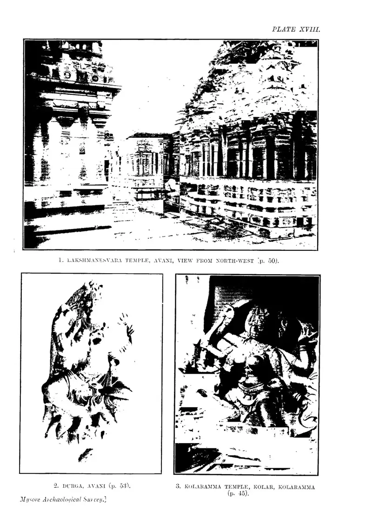
- LAKSHMANESVARA TEMPLE, AVANI, VIEW FROM NORTH-WEST (p. 50)
- DURGA, AVANI (p. 53)
- KOLARAMMA TEMPLE, KOLAR, KOLARAMMA (p. 45)
The Kāmākshī shrine is an imageless shrine with a garbhagrīha, a sukhanāsi, an open añkaṇa, a navaraṅga and a porch. The only things noticeable here are the pillars which are of the sixteen-sided and cylindrical type. The two pillars in the porch have floral hangings and are round. These and the other pillars are evidently brought from elsewhere and used for this building.
Kamakshi Shrine. The south mahādvāra is of the type obtaining in Ilavañji Vāsudēvarāya's time and bears an inscription of his. The east mahādvāra is a large one and probably of about the same or somewhat later date. The kalyāṇamaṅtapa with its pātālānkaṇa is of the 13th century. The Subramhanya temple is of the Vijayanagar period. It has an image of the god with four hands (abhaya, vajra, a bird—peacock, kaṭihasta). He has a consort on each side.
There are two tanks Śeshatīrtha and Giṇditīrtha. Near the latter and to the north of the prākāra is a small ruined Durgā shrine about 13' x 7' containing two round and fluted granite pillars of Chōla workmanship. The Durgā image (Pl. XVIII. 2) inside the shrine is an imposing figure about 4½' in height. She sits on a seat and has loose drapery below the waist, the upper portion of the body being naked. Her right leg treads on a demon who has fallen on the ground. Her four hands have the following attributes in order: abhaya, đamaru, trišūla and kapāla. She wears anklets, armlets, rings, bangles, skull-headed kiriṭa, makara-kuṇđalas and necklaces, as also a snake and a garland of skull heads. The slender waist, the high breasts and the fine folds of the drapery arranged splendidly on her stout thighs and the fierce look of her face which is nevertheless finely sculptured render the figure at once beautiful and terrible; and to the features of terror in the figure add the canine teeth of the goddess and the dishevelled hair behind her head. It is a pity that the nose of the goddess has been mutilated. The figure deserves to be preserved in a museum.
South of the prākāra on the inside there is a bas-relief representing of Rāvaṇa lifting the Kailāsa.
The courtyard is badly kept and needs levelling and dressing. The compound wall is damaged at the back of the temple and is to be repaired. Several of the shrines are reported to be leaking and the roofing needs to be examined. This is an ancient and important temple which fully deserves renovation.
Seringapatam—Places of interest
Seringapatam Railway Station
No heading in the body: this section starts at its printed page (53).
PLACES OF INTEREST.
The numbers given below refer to those given on the sketch map (Pl. XXIV, 2):—
1. Seringapatam Railway Station.
Old Masjid ; Old Garrison Hospital ; The Breach and Monument
No heading in the body: this section starts at its printed page (54).
Just to the north of the Garrison Hospital is a small mosque with a walled courtyard and a gateway. Its hall has wooden pillars of the tapering type. This mosque is said to have been the old Jumma Masjid of Seringapatam used by the Moslems before Tipu built the new Jumma Masjid.
A short distance to the south-west of the Breach is a high and ruined compound wall inside which there is the basement of a now disappeared building which had an inner quadrangle. Immediately after the siege of Seringapatam Colonel Wellesley (afterwards Duke of Wellington) was stationed here in charge of the British garrison. The hospital of the old garrison was housed in this area from 1799 for several years.
To the north-west of the island the broad river Kāvērī divides itself into the eastern and western branches. The old defence here consisted of a stone wall of about 8' high with a brick wall above it more than 10' high. It was poorly supplied with bastions and was mainly in the shape of two rather straight lines meeting at a corner. At this corner a large bastion had been erected and provided with a heavy battery facing north and west. Outside this wall were a wide moat and another lower Hindu wall which protected it from the enemies' cannon. Hyder and Tipu added to these outer defence works close to the river and put up a third and innermost wall with a rock-cut base and earthen top and a high cavalier overlooking and protecting the north-west battery. Between the second and third walls was a rock-cut moat.
The defenders never expected an attack from this corner, but General Baird had noted, as a prisoner, the weakness of the brick wall and directed the British attack on it. In May 1799 the battery of the Madras army was successful only in making it dangerous for Tipu's soldiers to make use of the north-west battery or even to stay near it; but the battery of the Bombay army firing at a shorter range from the Ísvara temple near the Gautama-kshētra levelled down the outer defences, seriously damaged the outer wall and so battered the brick structure of the second wall that they could easily climb up it. On 4th May, at 1 P.M. the British troops urged on by General Baird and led by Sergeant Graham, clambered up the battered wall and were surprised to find that the few sepoys intended for its defence had moved away some distance. Sergeant Graham, who was the first to climb up, got the flag handed on to him, planted it on the wall and cried out 'Cheers for Lieutenant Graham.' The next second he was shot and fell down. The British troops were surprised to find the inner moat and the earthen inner wall and taking a mere chance of finding a way to cross over divided themselves into two parties one of which went along the south wall until it found a narrow causeway meant for the use of the coolies
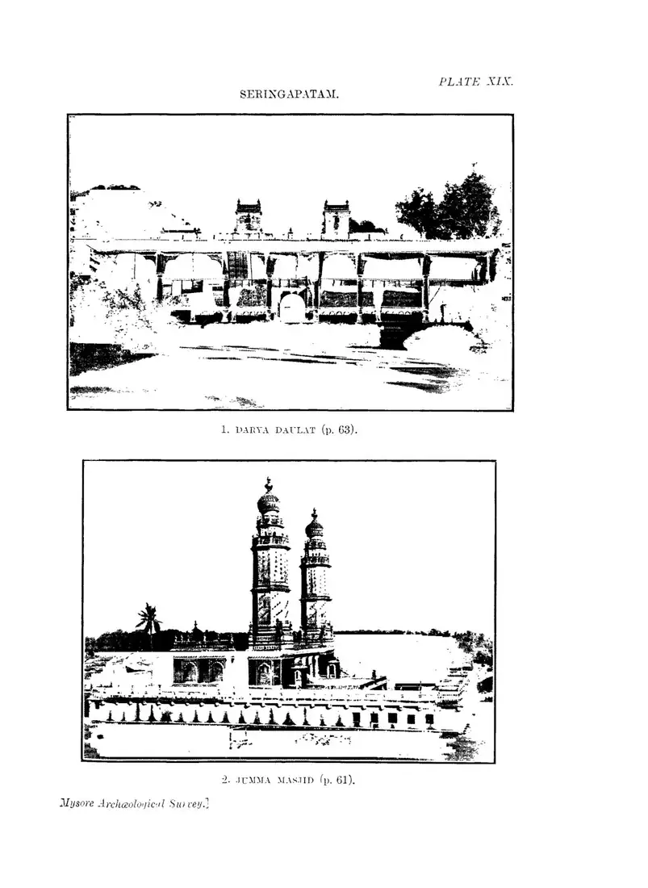
- DARYA DAULAT (p. 63)
- JUMMA MASJID (p. 61)
Cited in the text: p. 63 ↩
repairing the walls. There they crossed over and ran along the inner wall until they found a gateway near which firing was going on. The other party advanced slowly along the north wall and found itself opposed by Tipu and a few of his men. Tipu shot and retreated slowly until he came to the water gate.
Delhi Gate and Bridge ; Dungeons ; Jibi Gate
No heading in the body: this section starts at its printed page (55).
From 1799 till 1905 the walls and the breach were left in their original battered condition. At the suggestion of Lord Curzon the Government of Mysore put up a parapet across the breach and set up an obelisk in memory of the British assault and of the British officers who died at the siege of Seringapatam on 4th May 1799. The structure is one of polished stone and is in the form of a square-planned pier surmounted by a tapering obelisk. On the top and around are the cannon balls and the design is fine. On the slabs of the face of the pier are named the officers who fell and the units which fought at the siege of Seringapatam in 1799.
The Delhi gate, about a hundred yards to the east of the breach stands a small gateway protected by two round bastions which led pedestrians out of the fort by another small gate in the outer defences to a bridge across the river known as the Delhi Bridge. This bridge was pulled down by Tipu Sultan just before the fall of Seringapatam. On a bastion near the south end of the bridge are engraved the images of Hanumān and Gaṇēśa showing that the structure was originally a Hindu wall. The absence of cement and the use of dressed stone blocks support this view.
About a hundred and fifty yards to the east of the Delhi Gate there is a large oblong bastion in the fortwall on the top of which was formerly placed a heavy battery called Sultan Bateri. Under it is a dungeon hidden from the view of the passers-by. It is about 100' \times 40' and has got a low vaulted brick roof. Around the walls are stone slabs, the holes of which were meant to receive the chains of prisoners. It is said that many English prisoners were confined here under the ever-watchful guard of the sepoys of the battery (Pl. XXII, 3). It has been stated, perhaps wrongly, that Col. Bailey was kept here for some time. During the siege of Seringapatam one of the cannons rolled back, pierced the ceiling and fell into the vault. It is lying there still. It is more than 10' long and its mouth is 6'' wide.
Just to its west between the battery and the outer wall has now been constructed the new pump house called 'Jaya-Chāmarāja Water Works' for supplying water to Seringapatam.
The Jibi gate is a small gate in the fortwall leading from the temple area to the river. Just outside it is a small shrine of Hanumān which perhaps stands there from the pre-Hyder times.
7. Jibi Gate.
The Raṅganātha temple is one of the largest temples in the State and is of great local importance (Pl. XXI, 1). Its god has given the
Raṅganātha temple
The inscription on the south basement cornice of the sanctum states that the Hoysala King Ballāla II gave certain grants to the priests and Brahmans of Tiruva-Raṅga-Nārāyaṇa-Chaturvēdi-Maṅgalam. This establishes the fact that the innermost part of the temple was a Hoysala construction of which the large garbhagriha, the sukhanāsi and more than a score of large granite pillars bearing the round and star-shaped Hoysala forms remain. The garbhagriha wall has a basement of five cornices which are comparatively plain. The upper portions of the walls which are now hidden in the darkness of the kattale-pradakshiṇa are adorned with pilasters and fine towered canopies under some of which are sculptures; in one place, a kalaša, chakra, śaṅkha and padma are depicted in a band.
Inside the garbhagriha is a colossal image of Vishṇu reclining on the huge coils of the great snake Ananta who lifts up his seven-headed hood to shade his master's head. The snake is shown with scales, etc., and is very realistic. The reclining image shows the god supporting his head on his right hand, while his left hand is stretched over the body and holds nothing. The figure wears a tall kirīṭa and all manner of ornaments down to the toe-ring; but it has no lotus creeper rising from the navel. Near his legs is the image of the goddess Kāvērī made of a different stone and at his feet stands the sage Gautama. The image is so large that a full view of it cannot be obtained from the sukhanāsi or the navaraṅga beyond which visitors are not allowed to enter. The ceilings of the sukhanāsi and the garbhagriha are well designed shallow domes with padmas in the centre. The present navaraṅga is a structure mostly made up of round bell-shapped pillars and two pillars of the eight-pointed star shape with vertical scroll bands. From this navaraṅga proceeds the kattale-pradakshiṇa or dark circumambulatory passage. The ceilings are almost plain.
Guarding the navaraṅga doorway are two colossal dvārapālas and in front of them is a large pillared courtyard with an opening around the dhvaja-stambha and a pradakshiṇa on the west side. Most of the pillars in this yard are of unmistakable Hoysala shapes some of them being round, indented square-shaped, star-shaped, flower-shaped, cylinder-shaped, etc., all of them having parts corresponding to the bell, pot, wheel and umbrella mouldings characteristic of Hoysala work. The rather plain ceilings and beams and the inscriptions in the south part of the pradakshiṇa show that this portion has been a later construction for which the old Hoysala materials have been freely used. It may be inferred from a study of the inscriptions that the navaraṅga was constructed after the time of Dēvarāya and before
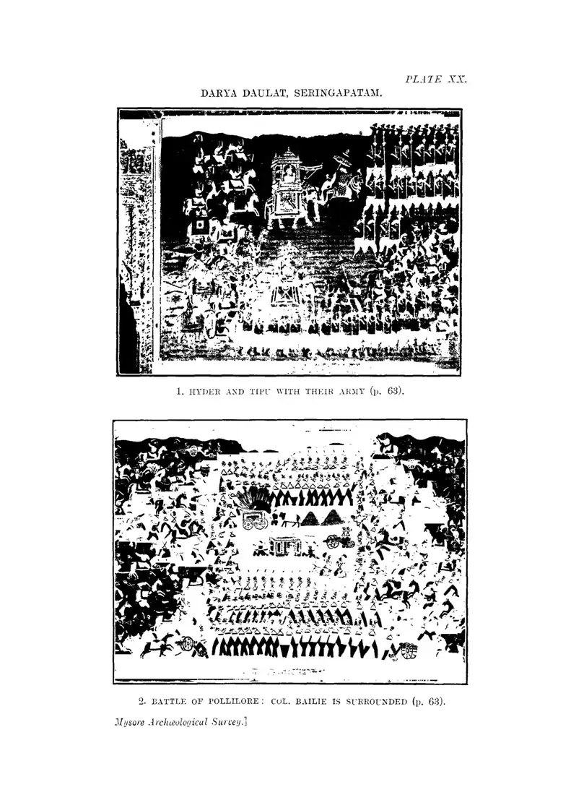
- HYDER AND TIPU WITH THEIR ARMY (p. 63)
- BATTLE OF POLLILORE: COL. BAILIE IS SURROUNDED (p. 63)
Raja's Palace
No heading in the body: this section starts at its printed page (57).
Krīshṇarāya. The Mysore Gazetteer says that a Daṇṇāyaka by name Timmaṇṇa Hebbār collected the materials of a large number of Jain Bastis from Kaṭastavāđi on the Mysore road and enlarged the Raṅganātha temple. Either this has happened or the materials of an old Hoysaṭa manṭapa have been utilised in the construction of the pillared court. At the four corners of this court there are shrines. On the south-east are Manavāṭamahāmuni and the Śrīvaishṇava Āṭvārs. On the south are Rājamannār Krīshṇa — a beautiful group — and Rāma. On the south-west are Narasimha and Sudarśana. On the west is Gōpālakrīshṇa, a beautiful Hoysaṭa image, resembling that at Sōmanāthapur and elsewhere. On the north-west is a shrine of Lakshmī as Ranganāyakī. The image is a fine one though of Vijayanagar workmanship. On the north-east are shrines housing another Rāma group, Rāmānuja, Dēšika, etc. Inside the gateway of the open yard stand shrines for large images of Hanumān and Garuđa against the east wall. Near this are four pillars of the Vijayanagar type bearing the 24 forms of Vishṇu with labels.
To the east of the pillared court is a large mukhamaṇtapa of late Vijayanagar construction. Here and there Hoysaṭa pillars have been used. In the centre of this manṭapa and piercing through its roof stands a large monolithic Garuđagamba. Some of the pillars to its west are of fine design. The eaves on either side of the Garudagamba show that the former mukhamaṇtapa ended here. The tall pillared part of the pātālānkaṇa to its east is said to have been constructed by Hyder Ali. The outer yard of the temple is protected by a high prākāra wall made of granite blocks. There appears to have been a pillared verandah on its inside but it has now disappeared. The Hydernāma mentions that in 1774 A.D. the temple caught fire 1 ; but it is not known which part was destroyed. Outside the north wall of the mukhamaṇtapa stands a brindāvana whose top is finely designed and decorated with sculptures of dancing Krīshṇa, Raṅganātha, Vēṇugōpāla and Janārdana. Inside the mahādvāra are four stone elephants of good workmanship. The large mahādvāra and gōpura are in the Vijayanagar style, the stone part of the mahādvāra having numerous pilasters and turreted niches. The gōpura is large and is a land-mark for many miles around. It is said that here Krīshṇarāja Vođeyar III was hidden and protected during the days of the battle of Seringapatam. The garbhagrīha tower is also of Vijayanagar workmanship, and is finely designed.
To the north-east of the temple, outside, there is a pond and near it an inscription of 1800 A.D.
About fifty yards to the south-east of the Raṅganātha temple is pointed out the place where the palace of the old Hindu rulers of Seringapatam is said to have stood. It appears to have faced northward and in it was born the young prince who was installed as the Rāja of Mysore in 1799. In recent years the Government of
8
Swinging Arch ; Coronation Building ; Narasimha temple
No heading in the body: this section starts at its printed page (58).
Mysore got a small pavilion erected here to commemorate the birth-place of the grandfather of the present Mahārāja.
About a hundred yards to the south of the Raṅganātha temple on the other side of the station road stands a masonry arch about a hundred feet in span and has been standing for close upon five generations. 1 When visitors stand on its key-stone and jerk, the arch swings to the extent of about 2 or 3 inches. It is a great attraction to juvenile visitors. Tradition says that it was designed and constructed for Tipu Sultau by a French engineer by name De Haviland as a sample of what the latter proposed to do by way of a single arch bridge for the Kāvērī river. The story goes that De Haviland was executed by Tipu during his Bellary campaign. But in reality the engineer was in British service and designed the new Government House at Mysore about the year 1807-8. It must have been during this period that the arch was constructed.
11. Coronation Building.
The Narasimha temple is a very large and partly ruined structure which has recently been repaired and put out of danger. It consists of a large original garbhagriha in the midst of which is a platform with four pillars. On it is installed a beautiful image of Lakshminarasimha whose beauty of figure, exquisite ornamentation and workmanship and fine jewelled and serpentine tōraṇas bearing the ten avatāras declare it to be definitely a Hoysala image. Wherefrom this image was obtained and whether it was originally in the neighbourhood, it is not possible to state. But when Kanthīrava-Narasarāja, the valiant Mysore ruler found it, he appears to have got a temple constructed with the garbhagriha, an oblong broadish sukhanāsi and a many pillared navaraṅga hall. The latter had an extension on the north in which the image of the king was installed. (Pl. XXII, 1.) This image which is 3½' high is a portrait statue of fine workmanship and great sculptural value. It shows the prince wearing a long coat, kammarband, etc., like a Mogul with long hair dressed in the old Hindu fashion. He wears moustaches with side-whiskers and stands with hands joined reverentially. The straight nose, the largish eyes and the prognathic face are no doubt due to the conventions of the sculptor. But the figure is realistic and is a great example of South Indian portrait sculpture in the 17th century.
The original temple appears to have had an open pradakshiṇa, the basement having four cornices with a frieze of retrospectant lions. In later times this appears to have been converted into a dark or kattale pradakshiṇa and a pātālānkaṇa with
1 This arch collapsed suddenly on 2nd July 1936. The cause of the collapse is being investigated by the Public Works Department.
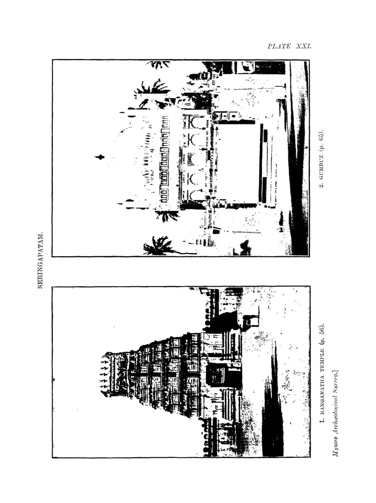
- RANGANATHA TEMPLE (p. 56)
- GUMBUZ (p. 65)
Cited in the text: p. 56 ↩
a covered prākāra added to the temple. At the four corners of this prākāra, cells and shrines were erected for the Ālīvārs, Āṇdāl, Lakshmī (a fine image, though of the late Vijayanagar type), Bālakrīshṇa on fours, Rāmānuja and Dēśika. This might have all been done in the days of Dodđadēvarāja or Chikkadēvarāja. At a still later date a large outer mukhamaṇtapa was added to the mahādvāra and an outer prākāra with inside verandahs and a gōpura were constructed making the temple a huge one. This outer prākāra is now mostly ruined. The rest of the temple is intact.
Memorial Hall ; Tipu's Palace ; Bathing Ghat ; Gangādharēšvara temple
No heading in the body: this section starts at its printed page (59).
Conservation. —Along with the image of Kaṇṭhīrava Narasarāja, the Narasimha image also should be protected. The temple is leaking in the north part of the kattale pradakshiṇa , the north part of the Lakshmī shrine, etc., and plants are growing here and there on the outer walls. These should be looked into. The outer courtyard is in a neglected condition. This should be levelled and kept neat and clean.
13. Memorial Hall.
About a hundred and fifty yards east of the Raṅganātha temple are now to be seen a mound and the ruined walls of what was once a magnificent palace inhabited by Tipu. It was dismantled about 1807 or 1809 (?) at the orders of Col. Wellesley and very probably its wooden pillars were utilised for the Maharaja's palace in Mysore. Originally the palace faced west and appears to have had an open pillared court in front like the Bangalore Palace and the Darya-Daulat.
About a hundred yards to the north of Tipu's Palace through a breach in the wall where originally appears to have stood a small gateway we cross the moat by a modern bridge and come to the Bathing Ghat constructed by the Mysore Government about a generation ago for the convenience of the public (Pl. XXII, 2). On either side of the steps leading to the river there are several small manṭapas under the spreading trees. Some distance to the west are seen the arches of the railway bridge.
To the north-east of the Palace Zenana enclosure stands an old temple of Gaṅgādharēsvara. The main shrine which faces east and the chief mahādvāra which faces south are both finely ornamented granite structures of about the days of Krīshṇarāya of Vijayanagar. The walls are ornamented with cornices and turreted pilasters and niches, and the eaves have pendant drops. A number of stone images are kept in the temple most of which belong to the middle or late Vijayanagar period. The temple has a large prākāra with a verandah and to its south-west is a manṭapa with a number of niches containing a large number of lingas and images of the Śaiva saints. Most of these appear to date from the days of the Dalvoys of Mysore. In one of the cells is now kept a copper image of Dakshiñāmūrti (chinmudrā, rudrākshamāla, vīṇa and pustaka), which is said to be of solid copper and bears an inscription stating that it was a gift of Dalvoy Nañjarāj. The mahādvāra has tall doorways with finely carved scroll friezes rising above female attendants standing on yālis. The pillars of the mahādvāra have their massiveness relieved by indentations of the corners and a well designed series of turrets rising in several tiers. The design of the pillars is different from that seen elsewhere, though it somewhat reminds us of that met with in the Sōmēśvara temple at Kōlār. The bracket or bōdige of the west pillar is cracked and must be examined by the Engineers.
Water Gate ; Place of Tipu's Death
No heading in the body: this section starts at its printed page (60).
To the north-east of the Gangādhara temple the fort wall is pierced by a low arched gateway known as the water gate since the palace people and the inhabitants of the northern part of the town used it as the best approach to the river. It was formerly thought that Tipu was caught inside this gateway between two sections of the British and was killed. A tablet has been put up by the Mysore Government; but this is a mistake. He really died about a hundred yards further east.
About fifty yards to the east of the water gate, inside the second fort line, is said to have stood another gateway which led through the inner earthen wall which Tipu had get constructed inside the second line. On the 4th of May 1799, pushed back by the storming troops Tipu moved along the second wall and descending from it near the water gate tried to enter the town through this second gate. It is said that he found the gate closed and the Killedar unwilling to open it. Meanwhile the British troops who had crossed over to the third wall came along, descended into the town and entered this gate from the inside. Tipu was thus caught in the gateway between the two advancing sections of the British forces and fell down wounded. The storming troops not knowing that Tipu was here entered the gate and rushed towards the palace. An English soldier later on narrated how he found here an unconscious Mysorean Sardar wearing golden belt and shot him in the temple when that person tried to defend it with his sword. It has been thought that Tipu met with his death thus.
When the British officers tried to trace the body of Tipu, his dying private secretary pointed to the place where his master lay under a heap of the dead. Tipu's body was easily identified since his face had not been disfigured and since he had worn a well-known talisman. The body was yet warm and was removed to the palace for the night. The erection of a suitable monument at this place may be considered. It is found that the inner fortification was razed to the ground by Col. Wellesley about 1807 and a row of tamarind trees planted (after the Vellore mutiny).
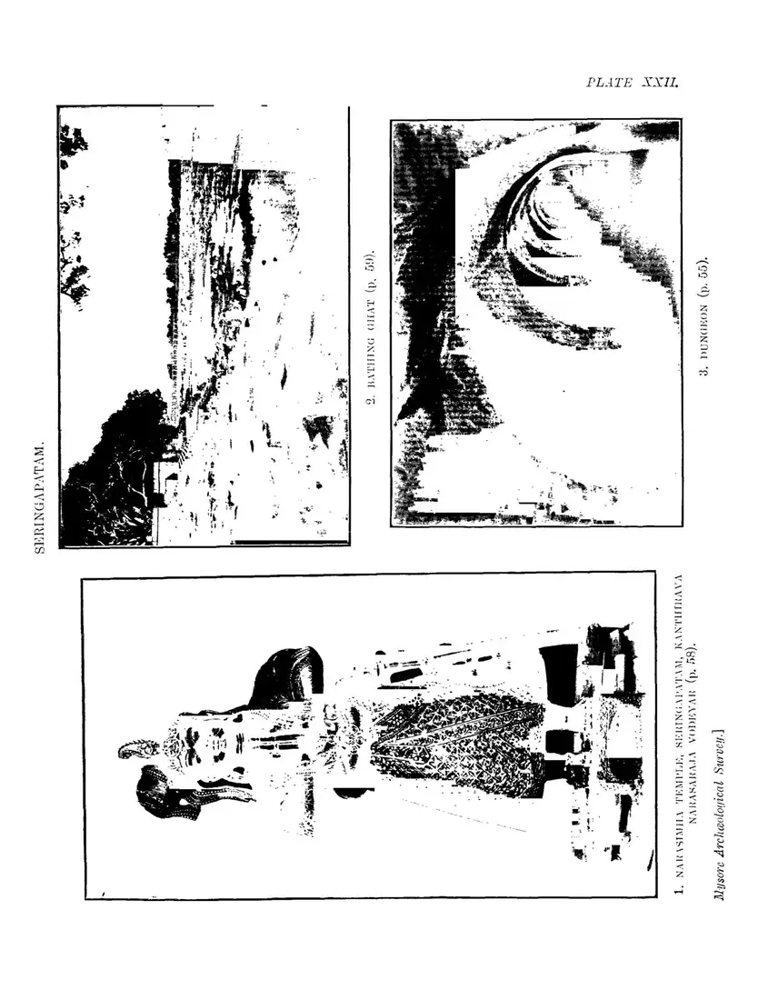
- NARASIMLA TEMPLE, SERINGAPATAM, KANTIHRAYA NARASARAJA VODEYAR (p. 58)
- BATHING GHAT (p. 59)
- DUNGHEON (p. 55)
Inman's Dungeon ; Wellesley Bridge ; Jumma Masjid
Bangalore Gates ; South-East Fort Wall ; Flagstaff Cavalier; Tipu's Racket Court ; Elephant Gate ; Somalinga Gate
No heading in the body: this section starts at its printed page (61).
At the north-east corner of the fort there is a large structure with a battery on its top and in its hollow is a low vaulted cellar about
19. Inman's Dungeon. 45' × 32' which resembles Bailey's dungeon, but is smaller.
It is said to have been discovered in 1895 by Mr. Thos. Inman, an Engineer. It is said that prisoners used to be confined here also and among them was a notorious Mahratta free booter, Dhonđia Vāg, who escaped on the day of the siege and gave considerable trouble in the north of the Mysore State in the days of Pūrniah and Wellesley until at last he was captured. Dhonđia had been converted by force to Islam but he appears to have returned to his old faith.
From the battlements above the dungeon a direct view is obtained of the Wellesley bridge, constructed by Pūrniah in honour of 20. Wellesley Bridge. Col. Wellesley, the Commander-in-Chief of Mysore. It is built of rough stone pillars and beams and is slightly arched to the west. Though rude in construction, it has proved its strength against the floods of the Kāvērī river. It was completely submerged in the flood of 1924. It was on this bridge that the plague rebels of Gañjām and elsewhere were stopped in 1899 when the reserve force of Mysore opened fire upon them and shot them. At the north end of this bridge is a pier-like monument bearing a Persian inscription mentioning that it was constructed in 1804.
Close to the eastern or Bangalore gate stood formerly a Hindu temple with a prākāra wall and a verandah running around. It was
21. Jumma Masjid. very probably a structure of the early eighteenth century and was not of great architectural importance. It is said to have been dedicated to Hanumān or Āñjanēya. Near it, in the field, Tipu is said to have played in his younger days when his father was yet a rising young officer in the Mysore army. One day a Fakir told the boy that he would some day become very prosperous and directed him to convert the temple into a mosque when he became a great man. When he became King Tipu compelled the Hindus to remove the image from the temple, filled up the groundfloor and on the top of the temple got erected the Jumma Masjid, the hall of which has numerous foil arches and a Mihrab on the west in the form of a small room. On the walls of the hall are found stone inscriptions with quotations from the Quran, etc. One of them gives the date of its construction as corresponding to 1787 A.D. The main points of interest in the mosque are its two great and beautiful minārs which combine majesty with grace (pl. XX, 2). Their shafts are ornamented with cornices and floral bands while near the top are two narrow terraces with ornamental parapets. From there a visitor gets a panoramic view of the neighbourhood. At the crown of the minārs are large masonry kalaśas placed upon flowers and fully ornamented. Above are smaller metallic kalaśas of the Hindu type. These minārs are things to admire in Seringapatam. A winding flight of more than 20C steps leads to the top of each.
In the middle of the east walls are now to be seen three gates leading towards Bangalore, formerly known as the Gañjām gates. They are
22. Bangalore Gates. high, arched structures with their upper portions mostly of brick. On either side of each gateway are guard rooms and on the south side of the easternmost of these and provided with a drawbridge, is still to be seen the machanism for manipulating the bridge. It consists of a large wooden wheel, about 8 or 10 feet in diameter, with handles. When this was turned a beam connected with its axle wound up a chain which passed through a ventilator and was attached to the outer end of the bridge.
Opposite to the outer gate are the ruins of a large vaulted cellar around which formerly stood a fort wall with a battery. Just inside the outer gate on the north an insignificant little mound indicates the place where Mir Sadak, Tipu's Dewan, fell. Moslem passersby spit at his tomb and believe that Mir Sadak betrayed the fort on the day of its siege and was killed by a guardsman and thrown into the ditch when he was trying to escape.
In 1791 Lord Cornwallis attacked Seringapatam from the south-east. After the war Tipu thought it better to strengthen the fortifications on this side deepening the moats and putting up an outer defensive wall and adding a number of cavaliers. Thus the fortifications here are very formidable. In the south-east corner of the outer wall was placed a battery, known as the Kālegauđana Bateri.
24. Flagstaff Cavalier.
On the left is another cavalier recently converted into a fresh water reservoir. To its north and adjoining it is Tipu's old Racket Court
25. Tipu's Racket Court. converted by the British garrison into a Ball-alley. The court is about 80' long and 40' broad and its south wall is about 35' high. The structure is open at the top.
Since the old south gates were too low to allow any elephant with a howdah to pass, Tipu got two more gates constructed of brick work
26. Elephant Gate. about fifty yards to the west. These are about 15' high, vaulted, and adorned with arches on the sides. On a wall adjoining the inner one Tipu got a stone tablet put up giving the date of its construction hoping that the fort would ever remain free from all misfortunes. The arches are cracked at the centre and may be looked into by the engineers.
The inner Mysore gate also was raised in height to allow the passage of an elephant. The outer one which was in a dangerous condition was repaired in recent years by the Mysore Government and provided with key-stone arches.
Proceeding directly south from the arch we pass through a small fort gate to the river side where stands a small ruined shrine of Šiva
27. Somalinga Gate. known as the Sōmalinga or Sōmēšvara temple. In the neighbourhood appears to have been the old cremation ground of Seringapatam. From the river bank a good view is obtained of the cart bridge over the south branch of the Kāvērī known as the Periapatṇa bridge.
28. Traveller's Bunga-low.
Traveller's Bungalow ; Darya-Daulat
No heading in the body: this section starts at its printed page (63).
About 2 furlongs directly to the east of the fort the river flows over a sandy bed in a south-easterly direction. Here on its south bank 29. Darya-Daulat. Tipu planted a large and well designed garden full of trees known for their fruits, flowers and shade. In the centre of the garden he erected, in 1784, his summer palace known as the Darya-Daulat, probably in commemoration of his victory extending to the seas (Pl. XIX. 1). The words mean 'The wealth of the sea.' The structure is raised on a square platform, about 5' high. Around it runs a wide verandah borne on tapering lotus—formed wooden pillars with trefoil arches ( Frontispiece ). The inner building which is also square faces the Nagarkhāna in the south and the river on the north, both the faces being exactly similar. The staircases are hidden in the dark rooms, concealed in the walls and on the first floor there is a small hall with projecting balconies in the centre. In this hall it is said that Tipu used to receive his ambassadors and guests. On the east and west sides there are three rooms each used perhaps for living purposes. An interesting feature of this building is that its walls, pillars and arches are profusely painted with varied colours including a free use of gold. The designs are highly interesting and the balconies are good works of art. On the west wall are painted four large battle scenes. The first shows Hyder Ali on an elephant in the midst of his troops marching forth for the First battle of Pālilūr (Pl. XX, 2.) His army is composed of swordsmen on horseback and footmen with spears. The former wear cloth helmets, long coats, breeches and slippers, while the latter wear jackets, breeches, sandals and turbans, held in position with handkerchiefs. In the second panel Tipu is riding on horseback and similarly proceeding to the battle. His favourite tiger stripes are conspicuous on his banners and elsewhere. His secretary who is reporting to him has his face disfigured by modern Moslems, since they think he is Mir Sadak, the traitor. Among Tipu's cavalry can be seen a company of French swordsmen led by an officer who is pointed out generally as Mons. Lally. The third panel shows the victory of Mysore at the battle of Pālilūr (Pl. XX, 1). Hyder and Tipu guide their troops from their elephants and the Mysore cavalry charges the British both in front and back. The French gunners and the commander of the Mysore forces play their part in the battle. The red-coated English soldiers have formed a phalanx to protect their ammunition and their leader Col. Bailey. The latter who is carried in a palanquin sits with his finger on his lips in dismay. A ball from the French gunners explodes the ammunition. The defeat of the British is certain. Tipu appears to have loved to contemplate this brilliant victory which resulted in the capture of Col. Bailey and the flight of Sir Hector Munro to Madras.
Kaul Bazaar ; Obelisk ; Catholic Cemetery ; Col. Grimstone's Tomb ; Abbe Dubois' Church ; Eastern Ferry
No heading in the body: this section starts at its printed page (64).
The fourth panel shows the Nizam's army with his horsemen and elephants arriving near the battlefield too late to be of any help to their allies, the British. Below the picture of the Nizam riding on horse back are painted the figures of a cow and a boar. Tradition states that Tipu alleged that the Nizam looked innocent like a cow and was really as wicked and contemptible as a boar ( survar ). It is explained that he came like a cow and fled like a boar. This painting throws light on Tipu's character.
The east walls of the building are covered with a large number of panels most of which contain the scenes of the durbars of various rulers contemporary with Tipu and otherwise. About a hundred of these personages are painted, among whom may be identified the Hindu Rāṇi of Chittore, Mohammed Ali Walajah, his queen, the Rāja of Tanjore, the Rāja of Benares, Bālāji Rao II Peshwa, Krishṇarāja Vođeyar III, (substituted for Purnaiya about 30 years ago) Māgađi Kempegauđa and Madikere Nāyak of Chitaldrug.
This building was used as a residence by Col. Wellesley during his command of the Mysore forces. It is being taken very good care of by the Gardens Department of the Mysore Government and in the Durbar hall is a framed order of Lord Dalhousie for its preservation containing extracts from a letter of Lord Wellesley who later on became the Duke of Wellington.
A little further on, the road crosses a drain-like channel. Here was formerly situated the big bazaar of Gañjām. In 1791 Tipu met 30. Kaul Bazar. Lord Cornwallis here in a specially erected pavilion, signed the treaty of Seringapatam and surrendered his sons as hostages. Since a kaul or treaty was signed here, the bazaar became known as the Kaul Bazaar.
About three furlongs directly to the south of the Darya-Daulat on the highland, stands a memorial obelisk bearing a tablet to the memory of the officers and men who fell. This highland is popularly called 'Sabbalrāni Tiṭtu' since Tipu impaled alive one of his women who was suspected of unfaithfulness.
32. Catholic Cemetery.
'In memory of Leut.-Col. Grimstone this monument was erected as a tribute of their affection and esteem by his brother-officers of the 33. Col. Grimstone's Tomb. fourth regiment of foot. He departed this life the 10th September 1801.' A monument bearing this inscription stands on a small hillock near the Seringapatam entrance to Gañjām village.
34. Abbe Dubois' Church.
35. Eastern Ferry.
36. Bailey's Tomb.
37. The Gumbaz.
38. Lal-Bagh.
39. Montague's Tomb.
40. Kaveri Confluence.
41. Old Southern Fords.
42. Gosai Ghat.
43. Abba Garden.
44. Scott's Bungalow.
45. Doctor's Garden.
Bailey's Tomb ; The Gumbaz ; Lal Bagh ; Montague's Tomb ; Kaveri Confluence ; Old Southern Fords ; Gosai Ghat ; Abba Garden ; Scott's Bungalow ; Doctor's Garden ; Mysore Gate ; Garrison Cemetery ; Periyāpaṭṇa Bridge ; Rāṇi's Tomb ; Paschimavāhini Railway Station
No heading in the body: this section starts at its printed page (65).
The middle of the south wall is pierced by a number of gates through which the road from Mysore passes. These had protective walls
46. Mysore Gate. in front and draw bridges which were worked by chains attached to large wheels with wooden handles inside the guard-rooms.
47. Garrison Cemetery.
48. Periapatna Bridge.
49. Rani's Tomb.
50. Paschimavahini Railway Station.
9
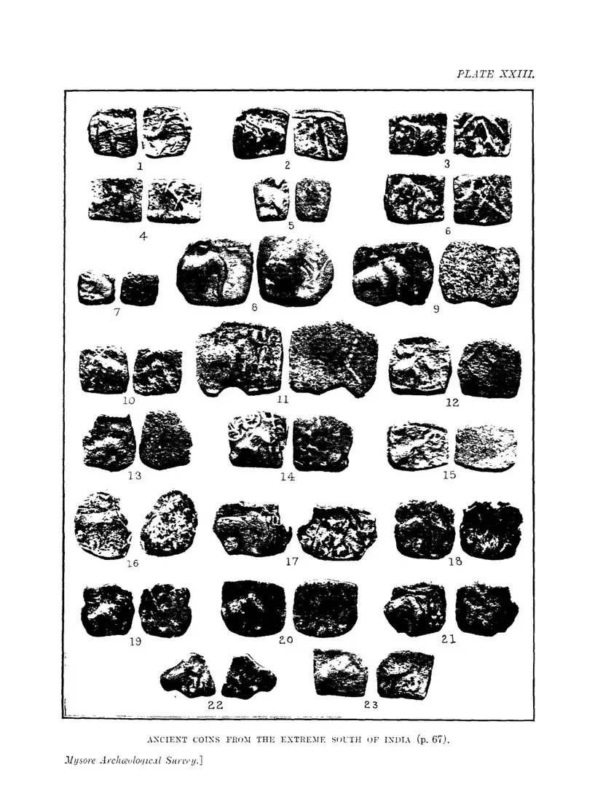
- ANCIENT COINS FROM THE EXTREME SOUTH OF INDIA (p. 67)
Cited in the text: p. 67 ↩
Part III: Numismatics
Ancient Coins from the Extreme South of India
(Pl. XXIII.)
Among the coin collections belonging to the Mysore Government Museum at Bangalore, there is a set of oblong copper pieces bearing generally the figure of a tusker elephant facing a trident and some peculiar marks above the elephant's back. They probably belong to the period of transition from punch-marking to die-striking. Some of these specimens are mentioned by Tufnell 1 and Loventhal 2 as coming from the Tinnavelly District in the extreme south of India. Loventhal mentions a score of these coins which were in the possession of Rev. Taylor. Such specimens are also found in the collections of the British Museum, the Ashmolean Museum at Oxford, and elsewhere. But the largest collection noticed till now is at Mysore and it is possibly Rev. Taylor's collection from Tinnavelly.
A detailed study of these pieces will be found in the appended Table.
Some similar pieces bear the bull type instead of the usual elephant type. We can recognise a general resemblance between these symbols on the one hand and the punch-marks of the Puranas and the pictographs on the Indus seals on the other, particularly on those of the elephant and bull types. The same lordly animal is standing to left or right, with a row of symbols in the field over its back. But it faces a pillar bearing a trisula instead of the manger.
It is the symbols over the back that deserve our most careful examination. They have now been copied with the help of a powerful jeweller's lens and reproduced on the appended plate as they are found on each piece, sometimes along with the trident. Among the symbols that can be distinctly identified are:—
Taurine symbol, svastika , damaruga , wheels of various shapes, pot with plant, crescent, trident, semicircle, shield, bell, square, and fish.
A preliminary study leads to the following inferences:—
(1) The marks that can now be identified have a greater resemblance to the Indus Pictographs than either to the known Buddhist symbols or to the punch-marks on the Purana coins as published by Theobald.
(2) They occur in different orders on sets of the pieces and are always in one or two lines, the largest number of symbols in a line being six.
(3) They are not mere religious symbols, but are possibly legends, which cannot be now read. Could they be names of the Korkai Pāṇdya rulers or of even earlier kings of the extreme south of India?
(4) They could not be later than the first century B.C. when double die struck Roman and Śātavāhana coins were current in South India.
1 Hints to Coin Collectors in South India.
2 Coins of Tinnavelly.
They are possibly earlier, and may have been the proto-type of the square issues of the early Šātavāhana elephant type.
(5) The identification and excavation of the site from which they were collected are matters of importance to Indian Archæology, since we may discover a very important pre-historic or early historic site.
Descriptive Table
(Pl. XXIV, 1.)
1. Ae. Wt. 26'9 grs ; size : 1'66 × 1'65 × '183 cm.
Trapezoid.
Obverse :—Fine tusker elephant standing to left facing a pillar bearing a trident.
Its trunk is hanging down. In upper field three symbols, not clear.
Reverse :—A triangular figure enclosed in a curved line.
2. Ae. Wt. 30'1 grs ; size : 1'78 × 1'62 × '122 cm.
Rhomboid.
Obverse :—Large elephant facing trident. In upper field legend of three symbols.
Reverse :—Large uncertain mark composed of two sets of converging lines with a wavy line below. The latter resembles a similar line on Šātavāhana coins of the Chaitya type.
3. Ae. Wt. 14'4 grains ; size : 1'88 × 1'38 × '093 cm.
Rectangular and very thin.
Obverse :—Fine large tusker elephant to left, facing trident. Above legend of six symbols the last of which is probably part of the trident.
Reverse :—A curved line enclosing a large triangular figure with intersecting medians.
4. Ae. Wt. 36'7 grs ; size : 1'75 × 1'4 × '183 cm.
Rectangular.
Obverse .—Large-headed tusker elephant to left. Above, legend of five fragmentary symbols.
Reverse :—Similar to No. 3. Fragmentary.
5. Ae. Wt. 25'7 grs ; size : 1'42 × 1'15 × '144 cm.
Rectangular with long vertical sides.
Obverse :—Elephant to left with two symbols above.
Reverse :—Effaced.
6. Ae. Wt. 41'2 grs ; size : 1'97 × 1'65 × '141 cm.
Rectangular.
Obverse :—Large and high-headed tusker elephant to left with low back. Above symbols not clear.
Reverse .—Triangular figure as on No. 3 without curved line.
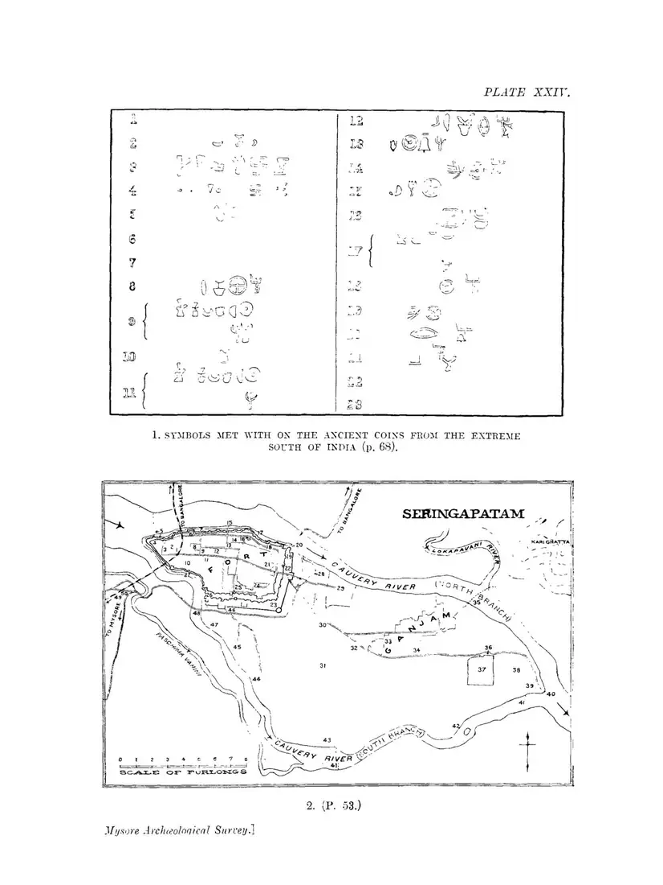
- SYMBOLS MET WITH ON THE ANCIENT COINS FROM THE EXTREME SOUTH OF INDIA (p. 68)
- (p. 53)
7. Ae. Wt. 26'4 grs ; size : 1'21 × 1'06 × '214 cm.
Rectangular.
Obverse :— Small tusker elephant to left appearing with lifted head and haunches almost seated on the ground. Above and below, symbols uncertain.
Reverse :—Blank.
8. Ae. Wt. 113 grs ; size : 2'5×2'18 × '273 cm.
Rectangular with one side broken and irregular.
Obverse :—Fine large tusker elephant standing to right with trunk hanging down facing a vertically set up trident battle-axe. Above, alongside of the trident are three other symbols.
Reverse :—Similar to No. 3. Worn out.
9. Ae. Wt. 84'4 grs ; size : 2'66 × 2'06 × '194 cm.
Oblong.
Obverse :—Large elephant to right facing trident. Above, six symbols.
Reverse:—Effaced. A blurred straight line is visible.
10. Ae. Wt. 28'6 grs ; size : 1'61 × 1'58 × '144 cm.
Square.
Obverse :—Fine tusker elephant to left. Above, several marks of which one resembling Brahmi ma is clear.
Reverse :—Large triangular mark set in a parabolic line.
11. Ae. Wt. 120'4 grs ; size : 2'91 × 1'46 × '198 cm.
Oblong with damaged sides.
Obverse :—Large tusker elephant to right facing trident. Above, six symbols very similar to those on No. 9.
Reverse :—Large triangular marks with intersecting medians. Outer curved line, not visible.
12. Ae. Wt. 65 grs ; size : 2'08 × 1'191 × '163 cm.
Square.
Obverse :—Tusker elephant facing trident battle-axe. Above, four other symbols.
Reverse :—Large triangular figure without outer curved line.
13. Ae. Wt. 45 grs ; size : 1'89 × 1'75 × '207 cm.
Square with damaged sides.
Obverse :—Tusker elephant to right facing trident. Above, three other symbols.
Reverse :—Effaced.
14. Ae. Wt. 54'2 grs ; size : 1'95 × 1'82 × '243 cm.
Square with two irregular sides.
Obverse :—Tusker elephant to right facing trident battle-axe. Above, two symbols, one of which is a wheel. The symbols are different from those on No. 12.
Reverse :—Effaced.
15. Ae. Wt. 65 grs ; size: 1'99 × 1'58 × '258 cm.
Oblong.
Obverse :—Elephant to right. Above, four symbols one of which is a wheel.
Reverse :—Triangular mark without outer circle.
16. Ae. Wt. 51'6 grs ; size : 2'13 × 1'94 × '16.
Oblong with larger vertical sides and one corner broken.
Obverse :—Elephant to right. Above, four symbols, the last of which is a square.
Reverse :—Large triangular symbol with intersecting medians.
17. Ae. Wt. 69'6 grs ; size : 2'6 × 1'8 × '23 cm.
Oblong with sides damaged.
Obverse :—Large elephant to right facing trident. Above, four symbols partly damaged.
Reverse :—Large triangular symbol with intersecting medians and without outer curved line.
18. Ae. Wt. 61'2 grs ; size : 2'03 × 1'91 × '195 cm.
Square.
Obverse :—Large elephant facing trident battle-axe. Above, several symbols partly damaged.
Reverse :—Large triangular symbol.
19. Ae. Wt. 49'5 grs ; size : 1'73 × 1'69 × '24 cm.
Square.
Obverse :—Tusker elephant to right, damaged. Above, two symbols looking like a wheel and a square.
Reverse :—Triangular symbol, damaged.
20. Ae. Wt. 60'8 grs ; size : 2'12 × 1'83 × '17 cm.
Oblong.
Obverse :—Large tusker elephant to right facing trident battle-axe to the right of which is an uncertain figure. Above elephant is a symbol which looks like a fish.
Reverse :—Triangular symbol.
21. Ae. Wt. 45'5 grs ; size : 2'04 × 1'77 × 1'55 cm.
Oblong.
Obverse :—Large tusker elephant to right facing trident battle-axe to the right of which there appears to be a taurine symbol. Above elephant there is a symbol which may be a fish.
Reverse :—Triangular symbol.
22. Ae. Wt. 21'3 grs ; size : 1'62 × 1'5 × 1'58 cm.
Obverse :—Tusker elephant to right facing pillar. The rest of the coin is damaged.
Reverse :—Triangular symbol damaged.
23. Ae. Wt. 37 grs ; size : 1'78 × 1'46 × 1'75 cm.
Oblong.
Obverse :—Tusker elephant to right facing pillar. Above, uncertain symbols.
Reverse :—Tiger or lion standing to left with the right fore-paw and tail uplifted.
———
Part IV: Manuscripts
Bejavāđi Mādhavānkana Kāvya
A paper manuscript of this work was found at Râmpur, Mołakálmuru Taluk, Chitaldrug District, in the possession of a Víraśaiva priest named Małemałthada Basavayya. It consists of 81 sheets each 15 inches long, 5 inches broad and 1½ inches thick. Each page contains 16 lines on the average and each line consists of about 70 letters of Kannađa writing. The manuscript seems to be about 30 years old and there is a colophon at the end which states that it was copied in the year Ānanda by Vírabhadrappa, son of Vastrada Muduvirappa of Děvasamudra for Siddappa, son of Tippanṇa, who was the son of Chiga Nāganṇa of Râmpura, in order that he might study it in the school ( šule ).
The work Mādhavānkana Kāvya is a poem in Kannađa of the 18th century composed by Šankarakavi, son of Basavarasa and disciple of Kuppasakantiya Guruvārya. The author was a Víraśaiva and a devotee of the god Rāmēśvara of Kōlūr. He invokes at the beginning of his work Sāvaļige Šivalingaděvaru, Murigesvāmi, Tipperudra, Chikkanṇođeya, Sirahatṭi Pakírayya, Hanugunde Noṇamuttinaprabhu, Tāvaragere Yaṇnēśa Muddappa, Madaļi Mahāděvi Heggappa, Rāmaiya of Saṇṇa Ballāpura, Madhuragāvi Šivalingaiya and other nūtanas (modern saints) in addition to the old poets Padmarasa, Udbhata, etc. The date of the work is given in page 81 of the manuscript as Wednesday, 7th lunar day of the dark half of Jyēshṭha in the cyclic year Ēsvara, 1679th year of the Šālivāhana era and corresponds to Wednesday, 8th June 1757 A.D.
The subject-matter of the poem is similar to that of Bhāvachintāratna by Gubbi Mallanārya and Rājaśēkharavilāsa of Shađakshari. Mādhavānka is named as the king of Bejavāđipatṭaṇa (in the Kistna District of the Madras Presidency) and he is described as a great devotee of Šiva and a patron of the Jangamas (Víraśaiva priests). It is further stated that once a poor boy in his kingdow was killed accidentally by the prince's horse and his mother complained to the king and that the king ordered the offender, who was his own son, to be beheaded as a punishment and that the person who carried out the execution also cut off his own head, as he had done a very unpleasant duty, and that the mother of the dead boy killed herself on account of grief at the loss of her son and that the king seeing all this was about to cut off his own head when the God Šiva intervened, saved the lives of all the above persons and took them to his own home, Kailāsa.
10
The poem is written in verse of the Vàrdhikā shatpadi metre and the poet has praised Āndhradêśa and the town of Bejavàđi. It is probable that he belonged to the Āndhra kingdom. Some of the verses describing battles, forests and other scenes are very well written and the poems are full of the usual alamkáras (figures of speech).
Footnotes
p. 10 3. For the Ugra-Narasimha figure on the south outer wall of the sukhanāsi a large shrine with a garbhagriha and a navaranga has been constructed in later times with varied materials among which are four slim bell-shaped Chālukyan pillars collected perhaps from the older temples to the east of the village. Since the Ugra-Narasimha image on the wall was damaged a separate Lakshmīnarasimha image is now being worshipped in the same shrine. In the interest of both the temples it is absolutely necessary to remove the extraneous structure and rebuild it for Lakshmīnarasimha somewhere else. This would give Lakshmīnarasimha his own independent temple and open to view the beautiful sculptures on the south wall of the Kēšava temple.
p. 28 1 See M. A. R. 1930 pp. 101-102.
p. 50 1. E. C. X. Kolar District, Mulbagal No. 38.
p. 57 1 See M.A.R. 1930, page 93.
All plates (22)
Click a plate to go to its place in the text; each plate there has links to the previous and next plate and back to this list.